Introduction
Renormalization (RN) theory is a powerful tool for understanding the behavior of physical systems at different length scales. It allows us to explain why certain features matter when we zoom out and others are washed away. It explains why we have universal classes according to symmetry and dimension and not, say, the precise shape of the atomic force laws. It justifies the use of toy models instead of microscopically accurate models.
RN theory is based on the idea of self-similarity – that a system looks the same at different length scales. For example, a coastline looks the same whether you are looking at it from a satellite or from a boat. Similarly, a magnet looks the same whether you are looking at it with a microscope or with your naked eye.
The basic idea of RN is to start with a microscopic description of a system and then to coarse-grain it. That is, to average over the details of the system at a smaller length scale to obtain a description of the system at a larger length scale. This process can be repeated, leading to a sequence of descriptions of the system at increasingly larger length scales.
The key insight of RN theory is that the long-distance behavior of a system does not depend on the details of the short-distance interactions. This is known as the universality hypothesis. Universality explains why systems that are very different at the microscopic level can have the same behavior at the macroscopic level. For example, water, oil, and electricity all exhibit the same percolation behavior near the percolation threshold, even though they are very different at the microscopic level.
Universality also justifies the use of toy models to study physical systems. Toy models are simplified models that capture the essential features of a system without including all of the details. For example, the Ising model is a toy model of a magnet that captures the essential features of ferromagnetism without including all of the details of the interactions between the atoms.
In this essay, we will explore the basic ideas of RN theory and see how it can be used to understand a variety of physical systems.
The logistic map: RN on \(\mathbb{R}\)
Let’s first study the logistic map, the simplest nontrivial example of renormalization that I know of. This section is based on Wikipedia.
The logistic map
Consider a function \(f_r(x)=r x(1-x)\), and we want to study what happens when we iterate the map many times. The map might fall into a fixed point, a fixed cycle, or chaos. We can see all those cases in its bifurcation diagram.

When the map falls into a stable fixed cycle of length \(n\), we would find that the graph of \(f_r^n\) and the graph of \(x \mapsto x\) intersect at \(n\) points, and the slope of the graph of \(f_r^n\) is bounded in \((-1, +1)\) at those intersections.
For example, when \(r=3.0\), we find that there is only a single intersection, at which point the slope is exactly \(+1\), indicating that it is a stable single fixed point, but is about to undergo a bifurcation.
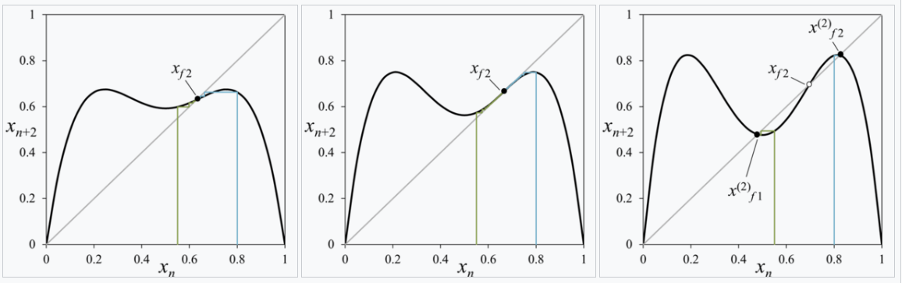
As \(r\) increases to beyond \(r=3.0\), the intersection point splits to two, which is a period doubling. For example, when \(r=3.4\), there are three intersection points, with the middle one unstable, and the two others stable.
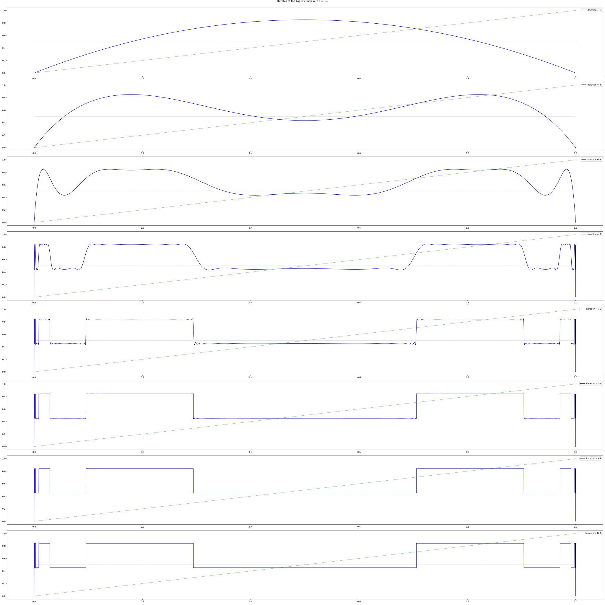
As \(r\) approaches \(r=3.45\), another period-doubling occurs in the same way. The period-doublings occur more and more frequently, until at a certain \(r \approx 3.56994567\), the period doublings become infinite, and the map becomes chaotic. This is the period-doubling route to chaos.
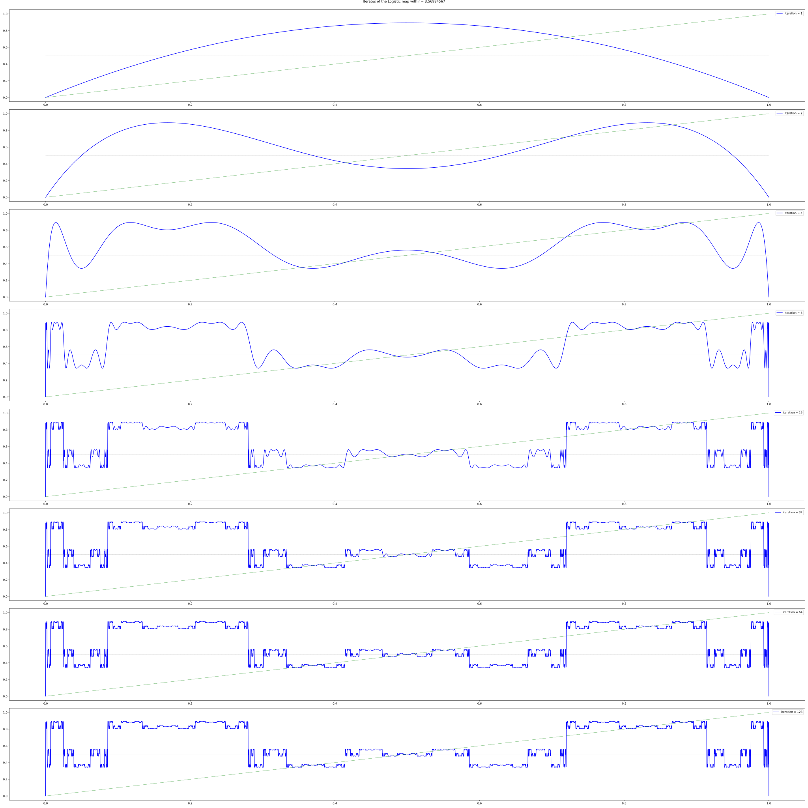
Something remarkable happens when we superimpose the graphs of \(f_r, f_r^2, f_r^4, \dots\) when \(r\) is at the critical point \(3.5699\dots\). We see that each iteration of the graph seems to resemble itself, except that it is scaled and rotated by 180 degrees. We can naturally guess that \(f_r^{\infty}\) converges to a certain function that is infinitely jagged, such that it exactly resembles itself when scaled and rotated; that is, it is a fractal.
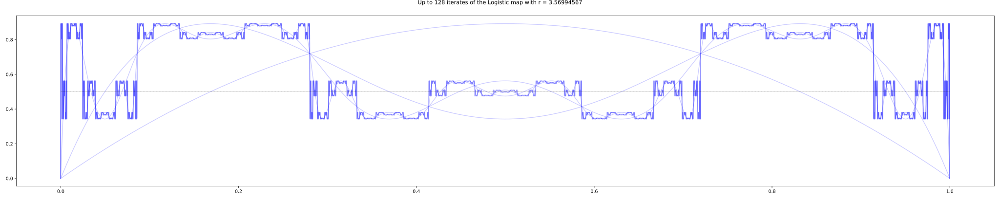
As \(r\) approaches the critical value, we can see how the graph of \(f_r^\infty\) takes on more and more details, and at the critical point, becomes a perfect fractal.
Universality
Looking at the bifurcation diagram, we can see a region, starting just after \(r = 3.8\), where there is a clear “window” with period \(3\) bursting out of a sea of chaos. The window then bifurcates repeatedly, to stable cycles of periods \(6, 12, 24, \dots\) until it all collapses back into the chaos again at around \(r \approx 3.8494344\). Though this is a different place, the bifurcation diagram looks suspiciously similar to the previous case.
Not only that, if we look at the movie of \(f_r^\infty\) as \(r\) approaches this critical point, we again see the same jagged shape.
Are we seeing some kind of universal feature of period-doubling routes to chaos? Is this a general pattern independent of the details of how exactly the logistic map is defined? What if we change to another dynamical system completely different?
For example, we can consider the gauss map \(x_{n+1} = \exp(-\alpha x^2_n)+\beta\). For a fixed \(\alpha\), we can plot the bifurcation graph as we vary \(\beta\). Though it looks different, the two bifurcation graphs have a clear resemblance. This is an instance of universality, for which we will see again and again later. If \(f_r\) is a family of curves with parabolic tops1, then it will bifurcate just like the logistic curve.
1 Rigorously, we can describe it as follows. If \(F: \mathbb{R}^2 \to \mathbb{R}\) is smooth, and for all \(r \in \mathbb{R}\), the function \(F(r, \cdot): \mathbb{R}\to \mathbb{R}\) has a single global maximum, at which point \(\partial_x^2 F(r, x) < 0\), then its bifurcation diagram looks the same as that of the logistic map, and it will have the same two scaling exponents \(\alpha, \delta\), to be calculated below.
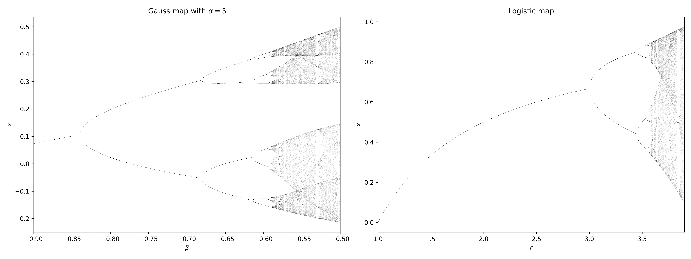
More to the issue at hand: why do the two graphs look similar?
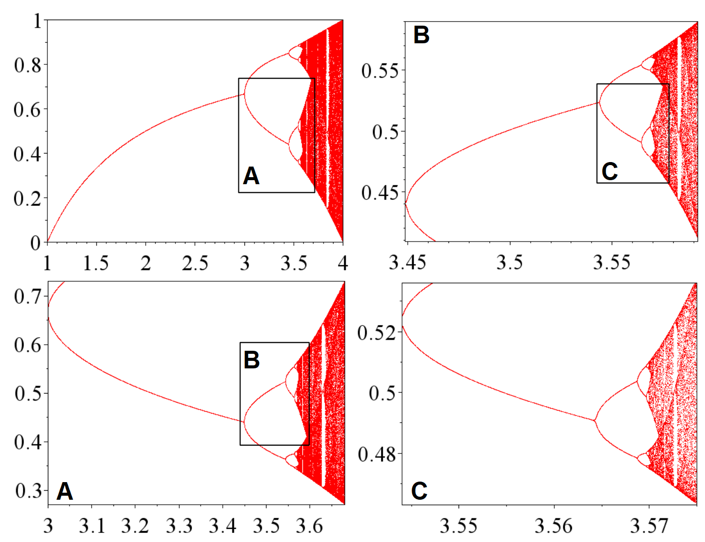
The self-similarity equation
Recall that we said the limit of \(f^\infty_r\) should be self-similar, in the sense that if we iterate it twice, then rotate and scale it by a factor, we get back the same function. That is, it should be a solution to the self-similarity equation.
\[ f(x) = -\alpha f\left(f\left(\frac{x}{-\alpha} \right)\right) \]
In words, if we scale up the graph for \(f^2\) by \(\alpha > 0\), and then rotate by 180 degrees, we get back the graph for \(f\). Why should this be the case?
Well, look back at the previous diagram of the first bifurcation:
The graph of \(f\) is a parabola, and the graph of \(f^2\) began by looking like a parabola, but its top eventually collapses like an overbaked pie, down and down, until it punches right through the \(y = x\) diagonal line again and … wait, wait, it looks like a little parabola again, except this time, it’s rotated by 180 degrees! And so we can run the same argument on \(f^2\), and conclude that the graph of \((f^2)^2 = f^4\) would collapse upwards, punching right through the \(y=x\) diagonal line again, and then history repeats with \(f^8, f^{16}, \dots\), repeating the same story again & again, but smaller & smaller.2
2 As a wise meteorologist has said:
Big whorls have little whorls, Which feed on their velocity; And little whorls have lesser whorls, And so on to viscosity.
And indeed, chaos theory, fractals, and RN all made early appearances in the study of turbulence.
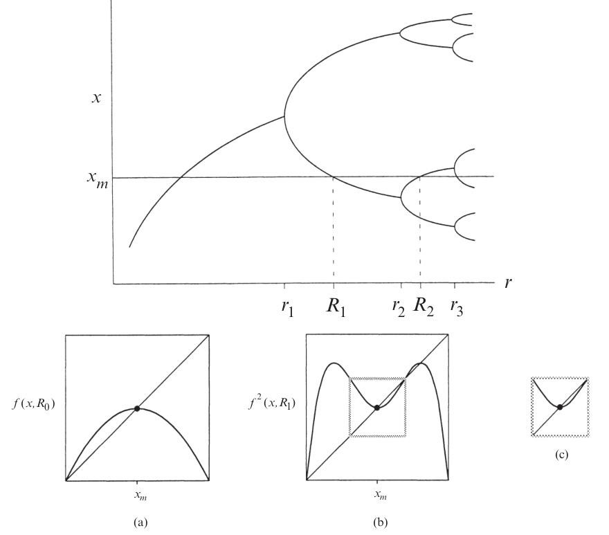
By eye-balling the curve, we see that \(f\) should be an even function, and that in a neighborhood of its centerpoint, . Also, since the \(f^2\) can be graphically calculated by doing the cobweb diagram with the graph of \(f\), it does not matter if we first scale up the graph of \(f\) by a factor of \(r\) to \(F\), then double it to \(F^2\), or if we first double it to \(f^2\), then scale its graph. We would get back the same thing. Thus, without loss of generality, we can scale \(f\) such that \(f(0) = 1\).
So, our task is to solve the following equation:
\[ \begin{cases} f(x) = -\alpha f\left(f\left(\frac{x}{-\alpha} \right)\right)\\ f(x) = 1 - a_2 x^2 + a_4 x^4 + \dots \end{cases} \]
We can solve the equation numerically as the fixed point. We would start with \(f(x) = 1-x^2\), then guess a good \(\alpha\) and repeatedly apply \(f \mapsto -\alpha f\left(f\left(\frac{x}{-\alpha} \right)\right)\). If we picked \(\alpha\) correctly, we would have gotten the right result, as shown:
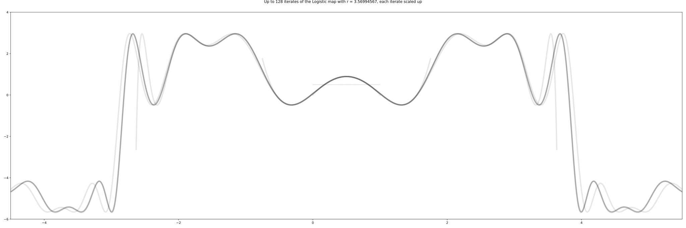
If \(\alpha\) is not correct, the iterates would not converge; instead, they would have a zooming effect that looks cool.
At order 2, we approximate by \(f(x) \approx 1 - a_2 x^2\) and ignore all higher-order terms. This gives us two equations for two unknowns:
\[ \begin{cases} 1-a_2 = \frac{1}{-\alpha} \\ \frac{2a_2^2}{\alpha} = a_2 \end{cases} \]
It has two solutions. One solution has \(\alpha < 0\), which we know is unphysical. The other one is
\[ \begin{cases} \alpha = 1 + \sqrt{3} \approx 2.732 \\ a_2 = \frac{1 + \sqrt{3}}{2} \approx 1.366 \end{cases} \]
What happens if we are not exactly at the fixed point but start slightly off? Let’s say we start with a function \(f_0(x) = 1 - a_{2,0}x^2\), where \(a_{2,0} = a_2^* + \Delta\), where \(a_2^*\) is the fixed point, and \(\Delta\) is small but nonzero. Here, we should think of the space of possible functions. Each point in this space is a possible scaling limit, but if we start a bit too small, we fall into boredom, and if we start a bit too high, we fall into chaos. Start just right, and we harvest a beautiful fractal.
After one iteration, we have \(f_1(x) = -\alpha_0 f_0(f_0(x/(-\alpha_0)))\), where \(\alpha_0\) was fixed by \(f_1(0) = 1\). This gives us
\[ \begin{cases} \alpha_0 = \frac{1}{-1+a_{2, 0}} \\ \frac{2a_{2, 0}^2}{\alpha_0} = a_{2, 1} \end{cases} \]
That is, we have the renormalization flow equation
\[ 2a_{2, 0}^2(a_{2, 0}-1)= a_{2, 1} \]
We can plot the space of all possible \(f(x)\) as a line, like
\[1-0x^2, 1-0.5 x^2, 1-x^2, 1-1.5x^2, \dots\]
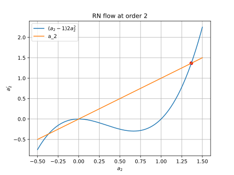
This is a 1-dimensional slice of the space of all possible \(f\) (the space of theories). Then, the effect of repeatedly applying the self-similarity map is to iterate the map \(a_2 \mapsto 2a_{2}^2(a_{2}-1)\). If we are precisely at the fixed-point \(a_2^*\), then we are not going anywhere, but if we are not exactly there, then since the slope of \(a_2 \mapsto 2a_{2}^2(a_{2}-1)\) is \(\delta \approx 5.73\) at that point, we would get farther and farther away:
\[ f_0 = 1-(a_2^* + \Delta)x^2, \quad f_1 = 1-(a_2^* + \delta\Delta)x^2, \quad f_1 = 1-(a_2^* + \delta^2\Delta)x^2, \quad \dots \]
and after \(\log_\delta(\frac{0.1}{\Delta})\), we would be at roughly \(1-(a_2^* \pm 0.1)x^2\), which is when we can finally notice that we are obviously no longer in the neighborhood of the fixed point anymore. If we start at \(a_2^* + \Delta/\delta\), then we can sustain the illusion for one more iteration. Similarly, if we start at \(a_2^* + \Delta/\delta^n\), then we can sustain the illusion for \(n\) more iterations.
Now, thinking back to what the logistic map says, we understand what we have discovered: The graph of \(f_{r^* - \Delta}\) is similar to the graph of \(f_{r^* - \Delta/\delta}^2\) scaled by \(-\alpha\). If we let \(r_1, r_2, r_3, \dots\) be the points at which the logistic map splits into a stable cycle of period \(2^1, 2^2, 2^3, \dots\), then we have \(r_{n} \approx r^* - \Delta/\delta^{n}\), and so we have:
\[ \frac{r^* - r_n}{r^* - r_{n+1}} \to \delta \]
This is usually spoken in this way: the intervals between two bifurcations shrinks at a rate of \(\delta\).
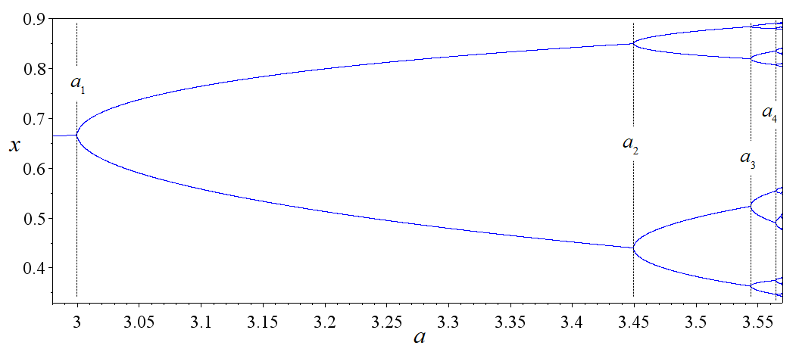
\(\delta\) is called Feigenbaum’s first constant, and \(\alpha\) is Feigenbaum’s second constant.
Similarly, we can solve the equation at order 4 by plugging in \(f(x) \approx 1 - a_2 x^2 + a_4 x^4\), obtaining 3 equations for 3 variables:
\[ \begin{cases} 1-a_2+a_4 = \frac{1}{-\alpha} \\ \frac{2a_2^2 - 4a_2a_4}{\alpha} = a_2 \\ \frac{a_4(4a_4+6a_2^2) - a_2(2a_4 + a_2^2)}{-\alpha^2} = a_4 \end{cases} \]
To solve this numerically, first guess a solution from the previous one, \(\alpha \approx 2.732, a_2 \approx 1.366\), then plug into the first equation to get \(a_4 \approx 0\). Then, standard numerical root-finding gives
\[ \begin{cases} \alpha \approx 2.534 \\ a_2 \approx 1.522 \\ a_4 \approx 0.128 \end{cases} \]
We can also make the same argument using a flow in theory-space, except now we are doing it over a 2-dimensional slice of it. The flow map is
\[ F(a_2, a_4) = \left( (2a_2^2 - 4a_2a_4)(-1+a_2 - a_4), -(a_4(4a_4+6a_2^2) - a_2(2a_4 + a_2^2))(-1+a_2 - a_4)^3 \right) \]
At the fixed-point \((a_2, a_4) = (1.522, 0.128)\), the Jacobian matrix is \[ \nabla F = \begin{bmatrix} 6.0506 & -6.2524 \\ 1.2621 & -1.6909 \end{bmatrix} \]
This matrix has eigenvalues of \(4.843, -0.483\), so it is a saddle point, with \(\delta = 4.843\). The flow and the eigenvectors \((0.982, 0.190), (0.691, 0.723)\) are plotted below.

In summary:
| Order 2 | 4 | \(\infty\) | |
|---|---|---|---|
| \(a_2\) | 1.366 | 1.522 | 1.530 |
| \(a_4\) | 0.128 | 0.105 | |
| \(\alpha\) | 2.732 | 2.534 | 2.503 |
| \(\delta\) | 5.73 | 4.843 | 4.669 |
Lessons
Even in this tiny problem, we can already draw several lessons, which will appear again and again in RN:
- We assume a function is self-similar, and calculate from there.
- Self-similarity is a transform on a function (or “theory”).
- We often need to use a “fudge factor” like \(\alpha\) to make sure that the transformed function does not collapse to zero, for trivial reasons.
- If we repeatedly apply the self-similarity transform on a function, we would obtain a scaling limit, a perfectly self-similar object – a fractal.
- In the space of all possible theories, the self-similarity transform creates a flow-field in the theory-space. The interesting fixed-points of the flow-field are its saddle points.
- The largest eigenvalue of the saddle point describes what happens when you are close to the saddle point, but not quite there.
- Bravely calculate using the cheapest approximation you can think of. It often gets you within 50% of the right answer.
- But if you want accuracy, you can always use a computer and calculate many orders higher.
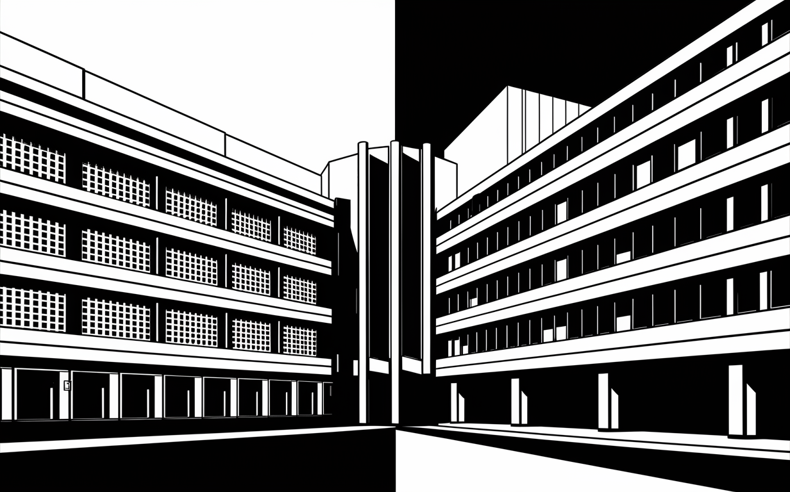
Ising model and friends: RN on a grid
This section studies RN on a grid, using what is called real space RN, in contrast to momentum space RN. Real space RN is a garden of tricks, useful and intuitive, but not as powerful as momentum space RN. If you find the kind of mathematical trickery in this section fun, look at (Kadanoff 1999b, chap. 14; Burkhardt and Leeuwen 1982) for more.
This paper attracted much favorable notice since, beyond obtaining all the scaling properties, it seemed to lay out a direct route to the actual calculation of critical properties. On closer examination, however, the implied program seemed – as I will explain briefly – to run rapidly into insuperable difficulties and interest faded. In retrospect, however, Kadanoff’s scaling picture embodied important features eventually seen to be basic to Wilson’s conception of the full renormalization group.
I recommend that you open these and play as you follow along:
Percolation
Percolation is about randomly punching holes in a material until it falls apart. In the simplest setting, the material is a square lattice \(\mathbb{Z}^2\), and each site (vertex) is either open or closed.3 Open means there is a hole there, and closed means the site is intact. Sites are open or closed randomly and independently with probability \(p\). We are interested in whether there is an infinite connected cluster of open sites.
3 Percolation on \(\mathbb{Z}\) is trivial, even more trivial than Ising model on \(\mathbb{Z}\). The trouble is the same: you can only go from one point to another point by one route, and if at any point on the route, you are stopped, then that’s the end – you can’t get there by any other way. Thus, long-range interactions decay exponentially with distance, which means no power law, no phase transition, no critical point. See a later section.
This is a model for a porous material: for example, water seeping through the ground. If we have a layer of rock, then groundwater can seep through if there is a single connected path from top to bottom. A layer of rock can be thought of as a grid, with little cracks between grid-points. According to percolation theory, at a “critical probability”, suddenly we have arbitrarily large connected clusters of cracks, and so water can seep arbitrarily far in the rock – it is all or nothing.
That is, there is a sharp transition: if \(p\) is small, then there is no infinite cluster of open sites, and the water cannot go through; but if \(p\) is large, then there is an infinite cluster of open sites, and water can go through. The critical value \(p_c\) is about \(0.5927...\). See (Grimmett 1999) for more details about percolation.
To use Kadanoff blocking for percolation, the first step is to coarse grain the lattice. We group the sites into blocks of \(3 \times 3\) and call a block open if there is a path of open sites connecting the left and right sides of the block. Otherwise, the block is closed.
The next step is to define a new percolation model on the coarse-grained lattice, but this is a little trickier than in the Ising model, because there is no obvious way to map the parameters of the original model to the parameters of the new model. We need to find a new probability \(p'\) such that the new model on the coarse-grained lattice has the same behavior as the original model on the fine lattice. In particular, we want the probability of having an infinite cluster of open sites to be the same in both models.
It turns out that there is no exact way to do this, but we can make an approximation. One way to do this is to use Monte Carlo simulations to estimate the probability of having an infinite cluster for different values of \(p'\).
Kadanoff blocking
This section based on (Simkin and Roychowdhury 2011, sec. 10) and (Stinchcombe 1991).

The idea of Kadanoff blocking is simple: “This fractal looks the same if I take off my glasses, just bigger. If I zoom out and blur a bit, we get pretty much the same thing again. So, if I take a 3-by-3 pixel, block and replace it by one big pixel, we should get the same thing again.”
Given a hexagonal grid, you make \(p\) of them black and the rest white. What is the critical \(p\) where you get a percolation (infinitely big black island)? To do this by blocking, we regard a triangle as a large spin, and “merge” the three spins on a triangle to one single spin. If two or three spins are black, then the whole spin is also black, otherwise, the whole spin is white.
Then, after one blocking operation, the lattice length increases from \(l\) to \(\sqrt 3 l\) , and the renormalized occupation probability changes from \(p\) to \(p^3 + 3p^2(1-p) = p^2(3-2p)\). That is, we have the RN flow equation
\[p' = p^3 + 3p^2(1-p) = p^2(3-2p)\]
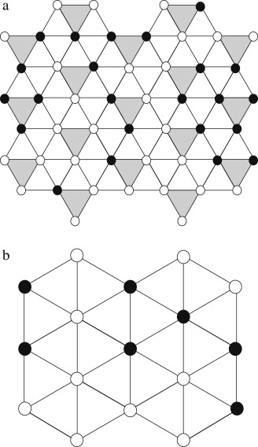
The equilibrium point is \(p=1/2\). This is the percolation probability. Let the reduced probability be \(\bar p = p-1/2\). We find that one iteration of the RN flow makes \(\bar p_{n+1} = \frac 32 \bar p - 2 \bar p^3\) which is \(\approx \frac 32 \bar p_n\) for small values of \(\bar p\).
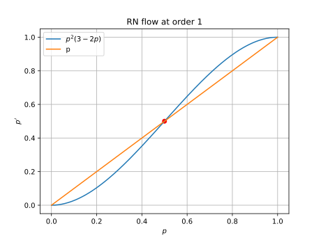
Suppose we start with \(\bar p_0\) , and we perform \(N\) repeats of RN to reach some constant \(\Delta \bar p\) (for example, 0.001), then
\[N = \frac{\ln \Delta \bar p - \ln \bar p_0}{\ln \frac 32}\]
during which time, the lattice length has increased by
\[3^{\frac 12 N} \propto \bar p_0^{-\frac{\ln 3}{2\ln \frac 32}}\]
Since at constant \(\Delta \bar p\), the lattice has a certain characteristic look-and-feel with a certain characteristic size for its clusters, we find that the characteristic length of its clusters is \(\propto (p-1/2)^{-\nu}\), where4
4 It amuses me to no end that the word characteristic is something chemists use a lot. Physicists do it too, sure, with their “characteristic length”, “characteristic height”, “characteristic temperature”, and such, but it is abstract. You rarely need to actually check a cake’s characteristic length against a standard cake. However, when you are doing chemistry, and you need to check a chemical’s characteristic smell, then you are out of luck.
I’m saddened to report that the chemical literature contains descriptions of dimethylcadmium’s smell. Whoever provided these reports was surely exposed to far more of the vapor than common sense would allow … its odor is variously described as “foul”, “unpleasant”, “metallic”, “disagreeable”, and (wait for it) “characteristic”, which is an adjective that shows up often in the literature with regard to smells, and almost always makes a person want to punch whoever thought it was useful. … if you’re working with organocadmium derivatives and smell something nasty, but nasty in a new, exciting way that you’ve never quite smelled before, then you can probably assume the worst. (Lowe 2013)
\[\nu = \frac{\ln 3}{2\ln \frac 32} \approx 1.355\]
The actual exponent is believed to be \(\nu = 4/3\), so we are only 1.6% off. Very good for such a cheap calculation!
The Ising model
Ferromagnets are weird. A single iron atom is a tiny magnet, but if the iron atoms in a piece of magnet are not oriented roughly in the same way, then the whole piece would have all its direction washed away, thus not be a magnet at all. In the atomic world, things jiggle about and tend to destroy all order, so how is it possible for a grid of atoms to stay pointing mostly in the same direction for days and weeks – an eternity on the atomic level?
In 1920s, Lenz had the idea of a simple atomic model for ferromagnetism. He gave the problem to his graduate student Ising, who solved it in the one-dimensional case. He was disappointed to see that there is no spontaneous magnetization, which is the key feature of ferromagnetism, and he conjectured that this is also true in higher dimensions. The model was thus neglected for a while, until (Peierls 1936) showed that the two-dimensional Ising model does exhibit a phase transition, and later, Onsager solved it completely in 1944, showing several curious features. This was a starting point of modern statistical physics. See (Domb 1985) for some more historical details.
The Ising model is a toy model of a magnet. For simplicity, we assume all the iron atoms are locked in a lattice, and each atom can only be spin up or spin down (like a coin that can be heads or tails). Neighboring atoms want to be the same, but temperature \(T\) makes the atoms jiggle and be random.
There are many different Ising models, but the following is the most standard. We have a grid of atoms, and each atom is nothing but a point with two possible values: \(+1\) or \(-1\). Nothing more complicated than that. The energy of the system is determined by the interaction between nearest neighbors, with a lower energy when neighboring spins are aligned. That is, its energy is
\[ H(s) = -J \sum_{i, j} s_i s_{j} \]
where \(J>0\) is the strength of interaction between neighboring atoms, \(s_i\) represents the spin at site \(i\), and the summation is over neighboring pairs of \(i, j\). For example, if we have Ising model on the integer line \(\mathbb{Z}\), then \(H = -J \sum_{i} s_i s_{i+1}\). Similarly, if we have an Ising model on the square grid \(\mathbb{Z}^2\), then \(H = -J \sum_{i} (s_{i} s_{i+(1, 0)} + s_{i} s_{i+(0, 1)})\).
We are not going to explain why, but in statistical mechanics, we have to calculate the following, slightly mysterious quantity \(Z\), called the partition function. Everything in statistical mechanics bursts forth from this one function. It is no exaggeration to say that the story of statistical mechanics is mostly about calculating \(Z\) at higher and higher precisions using larger and larger computers while losing more and more hair on the head. For the Ising model, \(Z\) is defined as
\[ Z := \sum_{s} e^{-\beta H(s)} \]
where \(\beta = 1/T\) is the inverse of the temperature \(T\). The summation is over all possible configurations of the system. For example, if the Ising model is over \(\{0, 1, 2, \dots, 99\}\), then the summation is over \(\{-1, +1\}^{100}\).
The temperature turns out to be not useful during the RN calculation, so to make the notation cleaner, we absorb it into the \(J\) like this:
\[Z = \sum_{s} e^{-\beta H(s)}, \quad H(s) = -J_0 \sum_{i, j} s_i s_{j}, \quad J_0 = J/T\]
After we finish the calculation, we should write the temperature explicitly again in order to interpret what we have found.
Kadanoff decimation, take 0
Like ancient Roman decimation, the idea of Kadanoff decimation is to pick out some spins for elimination, leaving behind the other spins gathered around the mangled nothings of their former comrades. In the case of the 1D Ising model, decimation is exactly solvable, making it a good first problem to try.
Let us consider the Ising model on the integer line \(\mathbb{Z}\) with periodic boundary conditions. That is, we have \(2n\) spins \(s_0, s_1, \dots, s_{2n-1}\) arranged in a circle. Now, we keep the even spins white and decimate the odd spins. How can we do that? Well, behold:
\[ \begin{aligned} Z &= \sum_{s_0, s_1, \dots, s_{2n-1}} e^{+J(s_0 s_1 + s_1s_2 + \dots + s_{2n-1}s_0)} \\ &= \sum_{s_0, s_1, \dots, s_{2n-2}} \sum_{s_1, s_3, \dots, s_{2n-1}} e^{J(s_0 s_1 + s_1s_2 + \dots + s_{2n-1}s_0)} \\ &\overset{\mathrm{hopefully}}{=} \sum_{s_0, s_2, \dots, s_{2n-2}} e^{J'(s_0 s_2 + s_2 s_4 + \dots + s_{2n-2}s_0)} \\ \end{aligned} \]
where we have hopefully written the \(J'\). It is our ardent hope that there exists some \(J'\), somewhere in the universe, that will make the equation come true.5
5 Physicists call it “ansatz”, but I prefer to say it like this:
The author of an atrocious undertaking ought to imagine that he has already accomplished it, ought to impose upon himself a future as irrevocable as the past.
— Yu Tsun, professor of English at Deutsch-Chinesische Hochschule.
Because each even spin can only reach its nearest-neighboring even spins via the odd spin between them, the partition function splits cleanly:
\[ Z = \sum_{s_0, s_2, \dots} \left(\sum_{s_1} e^{J(s_0 s_1 + s_1 s_2)}\right) \left(\sum_{s_1} e^{J(s_2 s_3 + s_3 s_4)}\right) \cdots \]
Thus, our wish would be fulfilled if \(\sum_{s_1} e^{J(s_0 s_1 + s_1 s_2)} = e^{J's_0s_2}\) for all 4 possible choices of \(s_0, s_2\). Now, by direct calculation, we see that our task is to solve the following 4 equations simultaneously:
| + | - | |
|---|---|---|
| + | \(e^{J'} = 2 \cosh(2J)\) | \(e^{-J'} = 2\) |
| - | \(e^{-J'} = 2\) | \(e^{J'} = 2 \cosh(2J)\) |
Immediately we see a problem: if both \(e^{J'} = 2 \cosh(2J)\) and \(e^{-J'} = 2\) hold, then \(1 = 4 \cosh(2J)\). This means that we have to introduce a “fudge factor” again. Does that remind you of the \(\alpha\) from the logistic map calculation? It should. Add in the fudge factor \(k\) with:
\[ Z = k^{n} \sum_{s_0, s_2, \dots, s_{2n-2}}e^{J'(s_0 s_2 + s_2 s_4 + \dots + s_{2n-2}s_0)}, \quad \sum_{s_1} e^{J(s_0 s_1 + s_1 s_2)} = ke^{J's_0s_2} \]
Now the solution is: \(J' = \frac 12 \ln \cosh(2J), k = 2\sqrt{\cosh(2J)}\). Again, we see that the RN flow equation
\[ J \mapsto \frac 12 \ln \cosh(2J) \]
But this time, the RN flow has only a single stable fixed point at \(J = 0\). Not only that, since \(\frac 12 \ln \cosh(2J) \approx J^2\) if \(J\) is small, if we decimate for \(n\) times, we would end up with \(J' \sim J^{2^n}\). What does this mean?
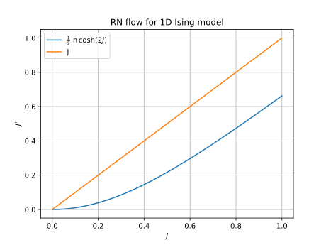
Suppose we start with a magnet with interaction strength \(J\), then after we zoom out for \(n\) times, where \(n\) is large, we would end up with a decimated view of the magnet, where we can only see the atoms at sites \(0, 2^n, 2\times 2^n, 3 \times 2^n, \dots\). Our RN flow calculation states that the strength of interaction between \(s_0\) and \(s_{2^n}\) are just the multiplication of all the bonds between them. This is not so strange if we think about it: on a 1D Ising model, the only way for \(s_0\) to interact with \(s_{2^n}\) is if they laboriously go, bond-by-bond, across all the \(2^n\) bonds, and at each bond, the interaction strength must be degraded. It would be like trying to draw with a pair of chopstick holding a pair of chopsticks holding a pair of chopsticks… holding a paintbrush. You rapidly run out of all bonding strength.
In particular, it shows that no matter how strong \(J\) is, the correlation between distant atoms would decay rapidly, and so there is no ferromagnetism on the 1D Ising model. This disappointment led Ising to abandon this model of magnetism back in 1925.
If you are ambitious, you can try doing the same RN analysis for a “ladder” made of two \(\mathbb{Z}\) put side-by-side. If you have “a lot of time” like Onsager, you would be on your way to solving the Ising model in 2 dimensions. I have not worked this out, because I don’t have a lot of time, but it would involve a 4-by-4 matrix. See page 12 for a sketch of solution.
Kadanoff decimation, take 1 (abortive)
Now that we have done it for 1D Ising model, we can attempt it for the 2D model. We will not be able to solve it exactly, but we will see what is going to happen. To start our analysis, we write out the partition function and Hamiltonian energy function:
\[ Z = \sum_s e^{-H}, \quad H = -J \sum_{i, j \text{ are neighbors}} s_i s_j \]
where again we have absorbed temperature into the Hamiltonian. To perform decimation, we paint the square grid like a checkerboard, and eliminate all the black-colored spins.

However, we can see a problem in the picture. Whereas in the original, un-decimated grid, only nearest neighbors are connected by a bond. In the decimated grid, not just the nearest neighbors, but also the next-nearest-neighbors are connected by a double-bond. Not only can you go from \((-1, 0)\) to a nearest-neighbor \((0, +1)\) via the to-be-decimated atom \((0, 0)\), but also go to the next-nearest neighbor \((+1, 0)\). Not only that, the square of 4 spins neighboring \((0, 0)\) are connected via \((0, 0)\), so we also need to account for that interaction. Thus, the renormalized Hamiltonian would have three kinds of terms: nn term, nnn term, and square-interaction term:
\[ -H' = J_{nn} \sum_{i, j \text{ are nn}} s_i s_j + J_{nnn} \sum_{i, j \text{ are nnn}} s_i s_j + J_{\square} \sum_{i, j, k, l \text{ are }\square} s_i s_j s_k s_l \]
Let the grid have \(N\) sites. We can ignore the borders, or roll up the borders like how we did it in the 1D case – it does not matter when \(N\) is large. The partition function of the system is
\[ Z = \sum_{s \in \{-1, +1\}^\text{grid}} \exp\left(J \sum_{ i, j \text{ are nn}} s_i s_j\right) \]
Now, decimate half of the grid, and leave behind the other half. As derived in (Maris and Kadanoff 1978), we have
\[ Z = f(J)^{N/2} \sum_{s \in \{-1, +1\}^\text{decimated grid}} \exp\left(J_{nn} \sum_{ i, j \text{ are nn}} s_i s_j + J_{nn} \sum_{ i, j \text{ are nnn}} s_i s_j + J_{\square} \sum_{ i, j, k, l \text{ are }\square} s_i s_j s_k s_l\right) \]
where \[ \begin{aligned} f(J) &= 2 \cosh ^{1 / 2}(2 J) \cosh ^{1 / 8}(4 J) \\ J_{nn} &= (1 / 4) \ln \cosh (4 J) \\ J_{nnn} &= (1 / 8) \ln \cosh (4 J) \\ J_{\square} &= (1 / 8) \ln \cosh (4 J)-(1 / 2) \ln \cosh (2 J) \end{aligned} \]
Why don’t we have the triangle terms like \(J_\Delta s_{(-1, 0)}s_{(0, +1)}s_{(+1, 0)}\)?
Since the system has the same energy if we flip all spins, the Hamiltonian is even, and so the triangle-term must be exactly zero.
Well, that’s fine, you might say, what’s the big deal? The big deal is that, if we were to repeat the decimation again, we will suddenly meet infinitely many interaction terms! How so?
Look at the square grid again. Suppose we have already included the nnn interactions, and we were to do a decimation. As we have seen, in order that the partition function before-and-after decimation are the same, we must construct one interaction term for each possible interaction mediated by a decimated spin. Well, \((-1, 0)\) and \((0, +1)\) are mediated by \((0, 0)\), so they must have an interaction term. No problem, that’s the nn term, written as \(J_{nn}s_{(-1, 0)}s_{(0, +1)}\). Similarly, \((-1, 0)\) and \((+1, 0)\) are mediated by \((0, 0)\), so they must have an interaction term. That’s the nnn term, written as \(J_{nnn}s_{(-1, 0)}s_{(+1, 0)}\). Do you see it now?
We can connect \((-1, 0)\) and \((3, 0)\) via \((0, 0), (1, -1), (2, 0)\). Not only that, we can connect them by infinitely many possible routes: \((0, 0), (1, -1), (2, 0), (3, -1)\), and \((0, 0), (1, -1), (2, 0), (3, 1)\), etc. And that’s not even the worst of it. Just like how we have arbitrary pair-wise interactions, we also have arbitrary group-interactions within subsets with arbitrary shapes. It is all a big mess, which goes to show how difficult the Ising problem already is in 2D, let alone in 3D.
We can of course deal with the problem by cutting off the weak interaction terms, like how we did the logistic map example. For example, we can preserve all interaction terms between spins that are at most 6 distances away, then compute the RN flow on the space of all Ising models on the square grid, find a saddle point, and compute the largest eigenvalue of the RN flow near the saddle point. The more terms we account for, the better the approximation is.
These calculations were much more elaborate than the model calculation described here; in my own work, for example, 217 couplings between spins were included. The critical exponents derived from the calculation agree with Onsager’s values to with in about 0.2%.
Migdal bond-moving trick
Before we are finished with the Ising model, here is one more trick: the Migdal bond-moving trick. The idea is shown in the diagram.

We perform the trick in two steps. First, we take the odd-numbered vertical bonds and move them to the even-numbered ones. Next, we decimate the crossed-out spins. Since this trick does not handle the vertical and horizontal bonds equally, we write the bond-strengths separately as \(J_x, J_y\). The RN flow of this step is
\[ (J_x, J_y) \mapsto \left(2 J_x, \frac 12 \ln \cosh(2 J_x)\right) \]
After doing the Migdal bond-moving trick once in the horizontal direction, we can do it again in the vertical direction. The total effect is to have decimated 3/4 of the grid, preserving one spin per 2-by-2 block of spins. The RN flow of the whole process is:
\[ (J_x, J_y) \mapsto (f_1(J_x), f_2(J_y)) \]
where \(f_1(x) = \ln\cosh(2x)\) and \(f_2(x) = \frac 12 \ln\cosh(4x)\). This RN flow has saddle point \((0.609, 0.305)\). If we apply the same RN, but in the other order (first horizontal, then vertical), we have instead \((J_x, J_y) \mapsto (f_2(J_x), f_1(J_y))\), with saddle point \((0.305, 0.609)\). Well, the true saddle point of the whole system should have equal \(J_x, J_y\), since the true system does not discriminate the horizontal and vertical, so the cheap answer is to take their average: \((0.609 + 0.305)/2 = 0.457\).
According to Onsager’s exact solution, the true critical point is \(J_c = \frac{\ln(1+\sqrt 2)}{2} = 0.4407\). So by this simple trick, we have already gotten within 3.7% of the true answer.
A small improvement is to find the “double fixed point”. That is, we consider applying the first RN flow, then the second, and calculate the fixed point of this compound RN flow. That is, we expect the real fixed point to be the simultaneous solution to
\[x = f_1(f_2(x)); \quad x = f_2(f_1(x))\]
Now, these have different solutions, so we do the obvious thing and take their midpoint. This gives \(0.4417\). And with that simple idea, I got within 0.23% of the true answer.
We can also calculate the scaling exponent, like how we found \(\delta\) for the logistic map. The average gradient at the fixed point is \(\frac{(f_1\circ f_2)' + (f_2\circ f_1)'}{2}\) which is \(2.7633\), corresponding to a length scaling exponent of \(\nu = \frac{\ln 4}{\ln 2.7633} = 1.364\), which is well off the real value of 1.


Side note: Onsager’s solution of Ising model in 2D
So far, we have been doing it for the Ising model on \(\mathbb{Z}\). But it’s clear that we can also do it for two \(\mathbb{Z}\)s put side by side like a ladder. Each “rung” of the ladder can be thought of as one big atom, with 4 possible states: up-up, up-down, down-up, down-down. We can then do the same calculation as the previous case, except that instead of a \(2\times 2\) matrix, we have a \(4 \times 4\) matrix.
For that matter, we can do it for any finite number of those \(\mathbb{Z}\) put together. We can then imagine doing that for such ladders with widths \(2, 3, 4, 5, 6, \dots\), then discover a pattern, and take the limit. If this works, we would solve the Ising model on \(\mathbb{Z}^2\).
Arduous as it sounds, this is exactly how Lars Onsager arrived at his solution for the Ising model on \(\mathbb{Z}^2\). He calculated up to ladders with width 6, diagonalizing matrices of size \(64\times 64\) in the process, then he guessed the general pattern and proceeded from there, emboldened by the guess. As Chen-Ning Yang reported:
In 1944, L. Onsager produced, quite unexpectedly, an exact evaluation of the partition function of the model in two dimensions. It was a real tour de force. I had studied his paper in Chicago in the spring of 1947, but did not understand the method, which was very, very complicated, with many algebraic somersaults….
In March, 1965… I asked him how it came about that he took all those complicated algebraic steps in his paper of 1944. He said he had a lot of time during the war, so he began to diagonalize the transfer matrix, which had already been discussed by E. Montroll and by H. A. Kramers and G. H. Wannier. He started with a \(2 \times \infty\), then a \(3 \times \infty\), then a \(4 \times \infty\) lattice. He then went on to a \(5 \times \infty\) lattice, for which the transfer matrix is \(32 \times 32\) in size. Such a matrix is quite large, but the experience he had gained with the smaller matrices came in handy, and he was able, after some time, to find all 32 of the eigenvalues. He proceeded then to the \(6 \times \infty\) case, and eventually diagonalized the \(64 \times 64\) matrix, finding that all the eigenvalues were of the form \(e^{\pm \gamma_1 \pm \gamma_2 \pm \gamma_3 \pm \gamma_4 \pm \gamma_5 \pm \gamma_6}\). That led to the concept that the algebra of the problem was a product algebra, and hence the manipulations in his paper.
I also want to quote this from the same pages, because it describes accurately what it feels like to do real-space RN:
a long calculation, the longest in my career. Full of local, tactical tricks, the calculation proceeded by twists and turns. There were many obstructions. But always, after a few days, a new trick was somehow found that pointed to a new path. The trouble was that I soon felt I was in a maze and was not sure whether in fact, after so many turns, I was anywhere nearer the goal than when I began. This kind of strategic overview was very depressing, and several times I almost gave up. But each time something drew me back, usually a new tactical trick that brightened the scene, even though only locally. Finally, after about six months of work off and on, all the pieces suddenly fitted together, producing miraculous cancellations, and I was staring at the amazingly simple final result [spontaneous magnetization of the Ising model]
Bonus: Edgeworth series
In a typical intermediate probability course taught to graduate students, the central limit theorem is taught in two lines: For any probability distribution with finite variance, check how its characteristic function varies under sum-then-average operations, and check that it converges to the characteristic function of the gaussian distribution.
This simple argument is the seeds to functional renormalization theory. This section is based on (Sethna 2021, exercise 12.11).
If we have a sequence of random variables \(X_1, X_2, \dots\), then we can do the double-then-average trick repeatedly:
\[ X_1, \frac{X_1 + X_2}{\sqrt 2}, \frac{\frac{X_1 + X_2}{\sqrt 2} + \frac{X_3 + X_4}{\sqrt 2}}{\sqrt 2}, \dots \]
Now, consider Fourier transforms to the probability density function
\[ \tilde\rho(k) := \int_\mathbb{R}e^{-ikx} \rho(x) dx \]
If \(X, X'\) are sampled from the pdf \(\rho\), then \(\frac{X+X'}{\sqrt 2}\) has the pdf \(\rho'\) such that
\[\tilde{\rho'}(k) = \tilde\rho(k/\sqrt 2)^2\]
Thus, we define an operator by \(R[\tilde f](k) = \tilde f(k/\sqrt 2)^2\), and the problem of central limit theorem is finding the fixed points of \(R\) and their local stability.
The pdf of \(\mathcal N(\mu, \sigma^2)\) transforms to \(e^{-ik\mu - \frac 12 \sigma^2 k^2}\), so \(\mathcal N(0, \sigma^2)\) is a fixed point of \(R\).
Let \(\rho^*\) be the pdf for \(\mathcal N(0, 1)\), then the question is to find the local linear expansion of \(R\) near \(\tilde \rho^*\). That is, we want to find the eigenvectors of \(R\):
\[ R[\tilde \rho^* + \epsilon f] = \tilde \rho^* + \lambda\epsilon f \]
Now, \(\tilde f_n := (ik)^n \tilde \rho^*(k)\) has eigenvalue \(1/2^{\frac{n-2}{2}}\). Since these \(\tilde f_0, \tilde f_1, \dots\) allow for Taylor expansion, these exhaust all possible eigenvectors of \(R\) near \(\tilde \rho^*\).
Consider a generic function \((1+a_0) \tilde f_0 + a_1 \tilde f_1 + \cdots\). It corresponds to a pdf
\[ \rho = (1+a_0) f_0 + a_1 f_1 + \cdots \]
\[ f_n(x) = \frac{1}{2\pi} \int_\mathbb{R}e^{ikx}\tilde f_n(k) dk = \partial_x^n \rho^*(x) = \rho^*(x) He_n(-x/\sigma)/\sigma^n \]
\[ He_0 = 1, He_1 = x, He_2 = x^2 - 1, He_3 = x^3 - 3x, \dots \]
Those are the probabilist’s Hermite polynomial.
The only dangers to convergence are \(f_n\) where \(n = 0, 1, 2\), since the other terms have eigenvalue less than 1. The effect of adding a small amount of \(f_0, f_1, f_2\) to \(\rho^*\) is to change it from \(\frac{1}{\sqrt{2\pi\sigma^2}} e^{-\frac{x^2}{2\sigma^2}}\) to
\[ \frac{1}{\sqrt{2\pi\sigma^2}} e^{-\frac{x^2}{2\sigma^2} + \ln a_0 - a_1 \frac{x}{\sigma^2} + a_2 \frac{x^2 - \sigma^2 }{\sigma^4}} \]
So we see that the effect of \(a_0\) is to normalize the probability mass to 1, the effect of \(a_1\) is to shift the mean, and \(a_2\) is to change the variance.
Therefore, if we always subtract the mean and dividing by the variance, then the first three perturbation terms \(f_0, f_1, f_2\) are zeroed out, leaving the other terms decaying to zero.
Normalize \(X\) to have mean 0 and variance 1, then we find that the pdf of \(2^{-n}\sum_{i=1}^{2^n}X_i\) is
\[ \rho_{2^n} = \rho^*(1 + 2^{-n/2}a_3 He_3(-x) + 2^{-n}a_4 He_4(-x) + \cdots) \]
where
\[e^{\frac 12 k^2}\tilde \rho(k) = 1 + a_3 (ik)^3+ a_4 (ik)^4 + \cdots\]
The Bernoulli variable \(\frac 12(\delta_{-1} + \delta_{+1})\) has
\[e^{\frac 12 k^2}\tilde \rho(k) = e^{\frac 12 k^2}\cos k = 1 - \frac{k^4}{12} - \frac{k^6}{45} + \cdots\]
giving
\[ a_4 = -\frac{1}{12}, a_6 = \frac{1}{45}, \dots \]
\[ \rho_{2^n}(x) = \frac{1}{\sqrt{2\pi}}e^{-\frac 12 x^2} \left[1 -\frac{1}{12} 2^{-n} He_4(-x) + \frac{1}{45} 2^{-2n} He_6(-x) + \cdots\right] \]
The exact result is
\[ \rho_{2^n} = \sum_{i=0}^{2^n} \frac{1}{2^{2^n}} \binom{2^n}{i} \delta_{\frac{-2^n + 2i}{2^{n/2}}} \]
which reduces to the previous result by Stirling approximation.
Bonus: Generalized central limit theorem
This section is based on (Amir 2020).
Consider three random walks generated from three distinct probability distributions: Gaussian, Cauchy, and Pareto \(\mu=0.7\). We notice two facts:
- The random walks are self-similar. A small section has the same look-and-feel as a large section of it.
- Different random walks have very different characters. The Gaussian walk appears smoother, while the Cauchy and Pareto walks display more dramatic jumps and bursts, reflecting the heavier tails of their respective distributions.
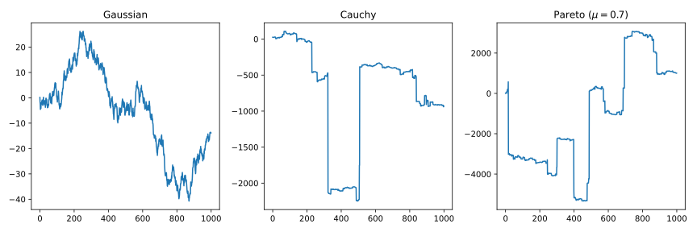
When we see self-similarity, we think RN. Can we use RN to study random walks? Yes.
Let’s take a fresh look at the central limit theorem. It says that if \(X_1, X_2, \dots\) are IID samples from a distribution with finite mean \(E[X]\) and variance \(V[X]\), then \(\frac{(X_1 + \dots + X_n) - n E[X]}{\sqrt{n V[X]}}\) converges to the standard normal distribution. If we think about it from the RN point of view, we can decompose each \(X\) into a sum of two random variables: \(X_i = A_i + Z_i\), where \(Z_i\) is a normal distribution with the same mean and variance, and \(A_i\) is the “noise” part of it. Each \(A_i\) might be overpowering, but when we repeatedly coarse-grain by taking a bunch of \(X_i\), and adding them up (a lossy operation!), we would eventually destroy all traces of what cannot survive coarse-graining, and leaving behind a fixed-point of coarse-graining.
We define the following letters:
- \(X_1, X_2, \dots\) are IID random variables, with characteristic function \(\phi_X(t)= E[e^{itX}]\).
- \(S_n = X_1 + \dots + X_n\).
- \(a_n, b_n\) are two sequences of real numbers, such that \(\frac{S_n - b_n}{a_n}\) converges in distribution to a nontrivial random variable \(Z\) with characteristic function \(\phi(t)\).
Since \(\frac{X_1 + \dots + X_n - b_n}{a_n}\) converges in distribution to a nontrivial random variable, the sequence \(a_n\) must diverge to infinity. For, if the sequence \(a_n\) is bounded, then for large enough \(n\) , the sum \(X_1 + \dots + X_n\) would spread wider and wider, and dividing it by \(a_n\) cannot keep it together.
Let \(Z\) be a random variable with characteristic function \(\phi\). By assumption, \((S_n- b_n)/a_n\) is approximately distributed like \(Z\) , that is, \(S_n\) is approximately distributed as \(a_nZ + b_n\). Thus,
\[\phi_{S_n}(t) \approx e^{ib_n t}\phi(a_nt )\]
Given \(1 \ll n \ll N\) , we can compute \(\phi_{S_N}\) in two ways: adding it up as \(N\) copies of \(X\) , or adding it up as \(N/n\) copies of \(S_n\). Both should give us the same result. That is: \[\phi_{S_N} = \phi_X^N = \phi_{S_n}^{N/n}\]
However, since \(n\) is very large, we have the approximations \(\phi_{S_n}(t) \approx e^{ib_n t}\phi(a_nt )\). Thus, we have
\[ \ln \phi_{S_N}(t) \approx \frac{N}{n}(ib_n t + \ln\phi(a_n t)) \]
Note how we have an exponent of the form \(Nf(n)\) , where \(N\) is a very large number, and \(n\) is a number that is small compared to it. This is a common pattern in RN calculation.
Since \(n\) is small compared to \(N\) , but large compared to \(1\) , we can pretend that it’s a continuous variable, and take derivative of it. Since the left side is independent of \(n\) , the derivative should be zero:
\[ \partial_n \frac{N}{n}(ib_n t + \ln\phi(a_n t)) = 0 \]
Simplifying it, and substituting \(t\) for \(a_n t\) , we get the field equation
\[\frac{\phi'(t)}{\phi(t)}t - \ln \phi(t) \frac{a_n}{n \partial_n a_n} + it\partial_n (b_n/n) \frac{n}{\partial_n a_n} = 0\]
Thus, we have obtained the field equation:
\[\frac{\phi'(t)}{\phi(t)}t -\frac{a_n}{n \partial_n a_n} \ln \phi(t) + \frac{n\partial_n (b_n/n)}{\partial_n a_n} it = 0\]
which we can solve by standard mathematical analysis without any more use of RN, so we don’t do those. You can read (Amir 2020) if you are interested.
However, there is a problem: If we have a “field” equation, what is the “field”? Well, here is one way to think of it.
Imagine a line of atoms, at locations \(1, 2, 3, \dots\). Each atom has a height \(X_1, X_2, X_3, \dots\). Now, we can coarse-grain the system by a factor of \(4\), by defining
\[Y_1 = \frac{X_1 + \dots + X_4 - b_4}{a_4}, \quad Y_2 = \frac{X_5 + \dots + X_8 - b_4}{a_4}, \quad \dots\]
from which we can perform another coarse-graining by a factor of \(100\), ending up with a coarse-grain by a factor of \(400\). Now, if the system has a nontrivial scaling limit, then this should give us the same result as doing a coarse-graining by \(5\), then by \(80\), or first \(6\) then \(67\). This is the RN argument we used here.
Now, since \(S_n \approx a_n Z + b_n\), we see that \(b_n\) can be thought of as the coarse-grained height of the height field, and \(a_n\) as the coarse-grained jaggedness of the height-field. Then, the field equation describes how the two numbers vary according to \(n\).
The maximum of random variables often has a nontrivial scaling limit as well. That is, there exists some sequence \(a_n, b_n\) such that \(\frac{\max(X_1, \dots, X_n) - b_n}{a_n}\) converges to a nontrivial distribution with cumulative distribution function (CDF) \(F\).
Let \(F_X\) be the CDF of \(X\); then we have \(F_{\max(X_1, \dots, X_N)}(t) = F_{\max(X_1)}(t)^{N}\). Now, derive the field equation by an RN argument.
Answer: \(\partial_n \frac 1n \ln F(\frac{t-b_n}{a_n}) = 0\).
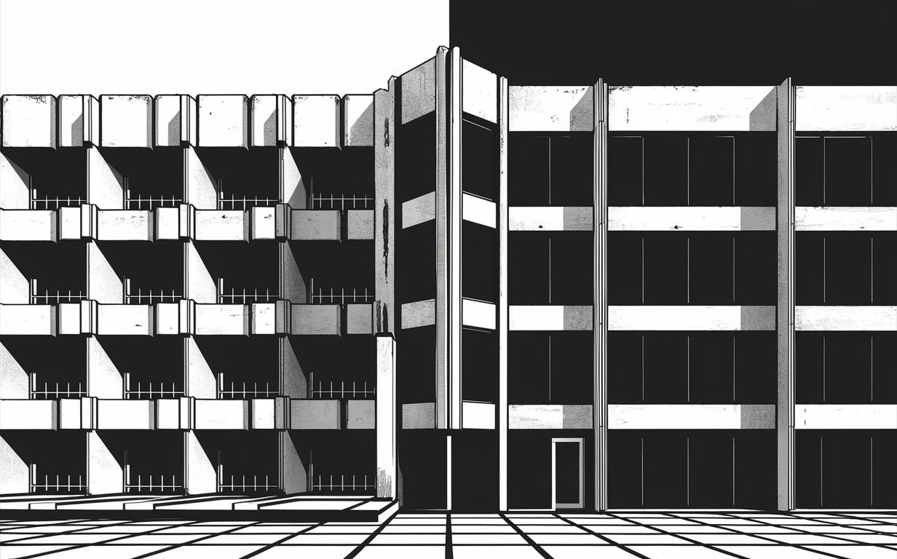
Wilson’s Nobel Prize: RN in momentum space

RN in momentum space, or RN in frequency space, is the most widely used method of RN nowadays. It is called “momentum” because it was first done by quantum field theorists to study subatomic particles, and in quantum mechanics, the spatial frequency of a particle-wave is proportional its momentum: \(p = \hbar k\), for which de Broglie was awarded a Nobel Prize in 1929.
In the 1970s, Kenneth Wilson invented RN in momentum space and used it to solve many problems. He was awarded the 1982 Nobel Prize in Physics for this work.
Unfortunately, unlike RN in real space, RN in momentum space is extremely verbose, requiring pages and pages of symbols. Instead of subjecting you to the horrible experience, I will sketch out the big ideas only.
There remained the possibility that there might be smaller but still infinite quantities left over. No one had the patience needed to calculate whether these theories were actually completely finite. It was reckoned it would take a good student two hundred years, and how would you know he hadn’t made a mistake on the second page? Still, up to 1985, most people believed that most supersymmetric supergravity theories would be free of infinities.
To know for sure whether a Feynman diagram with three virtual graviton loops produces infinite quantities, we would need to evaluate \(10^{20}\) terms. By five loops, a diagram spawns \(10^{30}\) terms … The unitarity method has completely changed the situation … What would have taken the Feynman technique \(10^{20}\) terms, we can now do with dozens. … we found that the 1980s era speculations were wrong. Quantities that seemed destined to be infinite are in fact finite. Supergravity is not as nonsensical as physicists thought. In concrete terms, it means that quantum fluctuations of space and time are much more innocuous in supergravity than previously imagined. If you ply us with fine wine, you might catch us speculating that some version of it might be the long sought quantum theory of gravity.
Field theory: continuous Ising model
Arguably the first field theory was hydrodynamics. Working in the era just after Newton, Euler and Lagrange understood water as a block of infinitely many tiny mass-points. Because each point is so tiny, they do not study the velocity of individual particles of water, but study the velocity field of the entire block of water.
The Ising model, with its grid of spins, provides a clear example of this continuum limit. As the grid of spins grow large, the individuals blur together into a field, similar to deriving hydrodynamics from particle dynamics. Let’s take a concrete example, of Ising model on the square grid \(\mathbb{Z}^2\).
Initially, the system’s energy and partition function are represented as a sum over individual spins:
\[ Z = \sum_{s: \mathbb{Z}^2 \to \{-1, +1\}} e^{-H(s)}, \quad H(s) = -J \sum_{i, j \text{ are nearest neighbors}} s_i s_j \]
Recall how, after two Kadanoff decimations, all forms of spin-spin interactions are unlocked, and so we arrive at an energy function in the most general form:
\[ Z = \sum_{s: \mathbb{Z}^2 \to \{-1, +1\}} e^{-H(s)}, \quad H(s) = -\sum_{\text{configuration }C} \sum_{i_1, i_2, \dots \text{ are configured like }C} J_C s_{i_1}s_{i_2}\cdots \]
We can convert the summation into an integral, and suggestively write it as \(Z = \int_{s: \mathbb{Z}^2 \to \{-1, +1\}} e^{-H(s)} ds\).
In the continuous limit, the discrete field of spins \(s: \mathbb{Z}^2 \to \{-1, +1\}\) blurs into a continuous field of spins \(\phi: \mathbb{R}^2 \to \mathbb{R}\). The energy \(H(s)\) becomes \(S[\phi]\), a functional6 an \(\phi(x)\) and its gradients. This gives us
6 A “functional” is nothing but a special kind of function. Specifically, it is a function of type \(\text{function} \to \text{number}\). We use square brackets in \(S[\phi]\), not round brackets like \(S(\phi)\), because it is conventional for functionals to use square brackets, not round brackets. It is written as \(S[\phi]\) rather than \(H[\phi]\), and called “action”, because of some old historical usage in variational calculus (as in “the principle of least action”).
\[ Z = \int_{\mathbb{R}^2 \to \mathbb{R}} D[\phi] \; e^{-S[\phi]} \]
Field theory, in general
Consider a mattress as an analogy. Let the state The state of the mattress is determined by the height and velocity of each point. That is, the energy function of the mattress comprises two quadratic terms: height of each point; height differences between nearby points. We assume the mattress points are massless, so that we have no kinetic energy. We can write the energy of the mattress schematically as
\[ \text{energy} = H(\phi) = \frac 12 K_0 \sum_i \phi_i^2 + \frac 12 K_1 \sum_{i, j \text{ are neighbors}} (\phi_i - \phi_j)^2 \]

If the mattress is held in an atmosphere of temperature \(T\), then its state becomes uncertain, following a Boltzmann distribution, just like how a pollen’s position in hot water becomes uncertain, due to Brownian motion.7 The probability that you would find the mattress in state \(\phi\) is then \(e^{-H(\phi)/T}/Z\), where \(Z\) is the partition function again:
7 When statistical field theory gets too scary, I call it “hot water theory” to make it sound nicer.
\[ Z = \int d\phi e^{- H(\phi)/T} \]
In the continuum limit, this analogy leads us to statistical field theory.
Calculating useful quantities within statistical field theory often involves complex mathematical techniques. This complexity arises from the need to compute the partition function, which involves integrating over all possible states of the system. In the case of the mattress analogy, the partition function involves an integral over all possible height fields, leading to the use of path integrals, written like \(\int_{\phi: \mathbb{R}^2 \to \mathbb{R}} D[\phi] e^{-S[\phi]/T}\).
Integrating over \(\mathbb{R}^{10^{23}}\) would be bad enough, let along integrating over \(\mathbb{R}^{\mathbb{R}^{2}}\), and yet the miracle is that this can be done, and can be done in a way that matches experiments.
Statistical field theory employs various tricks to calculate the partition function or its limits. A common approach involves alternating between discrete and continuous representations of the field for calculations.
Interestingly, statistical field theory is almost isomorphic with quantum field theory. The general idea is that if you take the dimension of time in a quantum field theory over space of dimension \(n\), and do a substitution \(t \mapsto it\), you somehow end up with a statistical field theory over space of dimension \(n+1\). This is the Wick rotation.
For example, the 1D Ising model is analogous to a particle in a double well. Whereas the single particle might switch from left to right after time \(\Delta T\), the Ising model chain might switch from \(+1\) to \(-1\) after space \(\Delta L\). Because of quantum tunneling, it is impossible to confine a particle in one side of the well – it will always jump to the other side, and the jumping probability is on the order of \(1 - e^{-kt}\) for some constant \(k\). This corresponds to the fact that there is no way to “freeze” an Ising model in one dimension. Even at low temperatures, the system cannot be entirely frozen. Long stretches of “up” spins can suddenly flip to “down” spins, no matter how cold the chain gets. Similarly, in the quantum analogy, the particle can tunnel between the two wells, no matter how high the barrier between them gets.
Generally, 1D statistical fields lack phase transitions, just like how a single particle with finitely many states would always quantum-tunnel between states, no matter how cold it gets. Conversely, since the 2D Ising model can be frozen, we naturally suspect that the quantum field theory on one dimension should have some kind of phase transition.8
8 I don’t know what it is, but perhaps Bose–Einstein condensation? I mean, I just flipped through (Herbut 2007) and the book suggests that this is it. Don’t quote me on this.
You get another perspective by noting that magnetism requires spontaneous symmetry breaking: you have more spins pointing up than down, even though the underlying energy function does not distinguish up from down. No symmetry breaking, no phase transition. And since the quantum states of a single particle can always tunnel between each other, it cannot fall into a symmetry-breaking state. However, since magnets can exist in 2D, we see that spontaneous symmetry breaking can occur for a 1D line of quantum particles evolving through time.
RN flow in the space of field theories
Think back to the Ising model on \(\mathbb{R}^2\). What is its action \(S[\phi]\)? If we were mathematically omnipotent, then we can simply perform RN flow on the discrete Ising model, and just find its fixed point, which should hopefully tell us what \(S\) is. But we can’t even perform a single RN flow. What to do?
Well, by universality, we can start with some very different discrete Ising model and end up with the same continuum limit after renormalizing enough times. Why can’t we start with some very different continuous Ising model, discretize it to a discrete Ising model, then renormalize it again until we are back to a continuous Ising model? And if we can do that, why can’t we renormalize directly in the space of all continuous Ising models? We can start with whatever Ising field theory we can write down, and then just repeatedly renormalize it. By universality, we will end up in an interesting place, no matter where we started.
But before we do that, we have to construct the space of possible Ising field theories. As Wilson would say, it is all about the symmetries.
There are two kinds of symmetries: the symmetry without, and the symmetry within. For the Ising field \(\phi: \mathbb{R}^2 \to \mathbb{R}\), we have Euclidean symmetry for \(\mathbb{R}^2\), and up-down symmetry for \(\mathbb{R}\). To ensure Euclidean geometry, the action \(S[\phi]\) should not explicitly depend on the position. That is, if we take some \(\phi\), and translate it by \(\delta\), then we must have
\[ S[\phi] = S[x \mapsto \phi(x + \delta)] \]
Similarly for reflections and rotations of the field. This shows that \(S\) must involve only terms like \(\phi, \nabla \phi, \nabla^2 \phi, \nabla \phi \cdot \nabla \phi\), etc.
To account for the symmetry within – the up-down symmetry – we must have \(S[\phi] = S[-\phi]\). This shows that \(S\) must have only even-ordered terms
Under these assumptions, you can convince yourself that the most generic form of \(S\) is
\[ S[\phi] = \int d x\left[\frac{1}{2} \nabla \phi \cdot \nabla \phi+\frac{1}{2} \mu^2 \phi^2+g \phi^4+\cdots\right] \]
where we removed an irrelevant constant term independent of \(\phi\), and picked the scale of length so that the coefficient for \(\frac{1}{2} \nabla \phi \cdot \nabla \phi\) is one.
This is the space of all possible Ising field theories. Each Ising field theory is completely specified if we specify the real numbers \(\mu, g, \dots\). Doing RN would then consist of taking one Ising field theory specified by some \(\mu, g, \dots\), then renormalize it to some other Ising field theory specified by \(\mu', g', \dots\). We can then find the fixed points in the theory-space, and say, “These are the most interesting theories. Let’s calculate their properties, scaling exponents, and look-and-feel.”
RN in momentum space
Consider an Ising field \(\phi: \mathbb{R}^2 \to \mathbb{R}\). It is of course possible to directly renormalize the field in real space: we blur it a bit, then zoom out. However, this turns out to be very hard to calculate with. Instead, it is much easier to renormalize the field in frequency space.
To “blur and zoom out” in real space – what does it look like if we take a Fourier transform? It would look like we are removing some high-frequency vibrations, then expand the vibrations so that low-frequency vibrations become high-frequency vibrations.
Now we are ready to meet RN in momentum space.
Let \(\tilde \phi\) denote the Fourier transform of a field. Now, solve9 for \(\tilde S\), so that \(S[\phi] = \tilde S[\tilde\phi]\) for all \(\phi\) in theory-space.
9 This is typically called “Fourier-transforming the operator”. For example, the Fourier transform of the gradient operator \(\nabla\) is \(ik\), where \(k\) is the wave vector.
\[ Z = \int D[\phi] e^{-S[\phi]} = \int D[\tilde\phi] e^{-\tilde S[\tilde\phi]} \]
Next, we restrict the domain of integration from all frequencies, to only frequencies below an upper limit \(\Lambda\). This is called “frequency cut-off”10:
10 This frequency cut-off is often called “ultraviolet cutoff”, because we throw away all frequencies that are too high, and for light, ultraviolet light is high-frequency. That’s it. It started as a hack meant to remove the annoying infinities that crop up everywhere in quantum field theory. You might have heard mysterious whispers of how renormalization “cuts off infinities” and makes them “normal again”. In fact, this is where the horrendous name “re-normalization” came from. If I had any choice in the matter, I would have called it “re-scaling”. At least that would be more descriptive.
For that matter, “renormalization group theory” is also a terrible name. To an applied physicist, the name “group theory” is abstract, inspiring fear and uncertainty. To a mathematician, the name “group theory” is plain wrong, because you can always undo a group-action, but you can never undo a coarse-graining.
In modern QFT, this compromise has been converted into a triumph. Instead of a hack to remove infinities, it is now interpreted as a necessary fact about the world. To see high-frequency features in space, we have to be able to probe it. To probe it, we need to fire some high-frequency particles at a space. High-frequency particles have high energy, and the higher the energy gets, the more complicated the interaction gets, and in this way, the quantum field theory actually changes depending on our choice of frequency-cutoff.
Wilson’s analysis takes just the opposite point of view, that any quantum field theory is defined fundamentally with a cutoff A that has some physical significance. In statistical mechanical applications, this momentum scale is the inverse atomic spacing. In QED and other quantum field theories appropriate to elementary particle physics, the cutoff would have to be associated with some fundamental graininess of spacetime, perhaps a result of quantum fluctuations in gravity. … whatever this scale is, it lies far beyond the reach of present-day experiments. The argument we have just given shows that this circumstance explains the renormalizability of QED and other quantum field theories of particle interactions. Whatever the Lagrangian of QED was at its fundamental scale, as long as its couplings are sufficiently weak, it must be described at the energies of our experiments by a renormalizable effective Lagrangian.
\[ Z \approx \int_{\tilde \phi(k) \text{ is nonzero only for }\|k \| \leq \Lambda} D[\tilde\phi] e^{-\tilde S[\tilde\phi]} \]
Next, we pick some small number \(\epsilon\), and integrate away all frequencies on a shell:
\[ \begin{aligned} Z &\approx \int_{\tilde \phi^- \text{ is nonzero only for }\|k \| \leq (1-\epsilon)\Lambda} D[\tilde \phi^-] \left(\int_{\tilde\phi^+ \text{ is nonzero only for }(1-\epsilon)\Lambda \leq \|k \| \leq \Lambda} D[\tilde\phi^+] e^{-\tilde S[\tilde\phi^-, \tilde\phi^+]}\right) \\ &\overset{\mathrm{hopefully}}{=} \int_{\tilde \phi^- \text{ is nonzero only for }\|k \| \leq (1-\epsilon)\Lambda} D[\tilde \phi^-] e^{-\tilde S'[\tilde \phi^-]} \end{aligned} \]
This gives us some renormalized action \(\tilde S'\) in frequency space. Do an inverse Fourier transform to obtain \(S'\), then scale space down by \((1-\epsilon)\), to obtain the fully renormalized action \(S''\). The RN flow is then defined by
\[ S \mapsto S'' \]
Since \(\epsilon\) is small, we can make it infinitesimal, to obtain the RN flow (a real flow this time!)
\[ S \mapsto S + \epsilon F[S] \]
where \(F\) denotes the RN flow field in theory-space. It is a functional of \(S\), since the flow field differs for each theory in theory-space.
This is as far as we are going to discuss the RN in momentum space. Any more and I would be writing a textbook on QFT, and you are better served by a proper textbook like (Zee 2023, 2010), etc.
Bonus: How to publish in quantum field theory
Work through a textbook and learn RN in momentum space.
Learn group theory and group representation theory.
Write down many groups with some nice geometry, like \(SO(3)\).
Construct a group out of those. For example, \(G = SO(4) \rtimes SU(3) \times SU(2) \times U(1)\). The group \(G\) should have around 10–20 dimensions, but if you are a string theory enthusiast, then 500 dimensions is perfectly fine.
Construct another group \(H\).
Pick a nice space \(X\). For example, \(X = \mathbb{R}^4 \times \mathbb{C}^6\). It must be a space that \(H\) can act upon.
Pick another space \(Y\). It must be a space that \(G\) can act upon.
Construct the most generic possible functional of type \(S: (X \to Y) \to \mathbb{C}\) that is still compatible with the two symmetry groups \(G, H\).
Spend the next month doing RN calculations about \(Z := \int_{\phi: X \to Y} D[\phi] \; e^{-S[\phi]}\), probably with Feynman diagrams scribbled everywhere.
Type it up in LaTeX.
Suffer through peer review, or just put it up on arXiv.
A bag of intuitions
After the long, hard slog at mathematics, we can take a break, take stock of what we have learned, and make some philosophical reflections. I guarantee that you will find at least one sentence here that you can proclaim with style at a party.
Power laws are born of two exponential parents
Why is it that a critical point is typically surrounded by a power law? One intuition is that at a critical point, two exponentials are matched exactly – an exponentially decaying interaction strength and an exponentially increasing number of interaction paths – and a power law is born in their collision.
Consider the Ising model on the plane. Fix an origin \(0\) , and we ask, how strong is the correlation between the origin \(0\) and a point that is at distance \((n, n)\) away from the origin, where \(n\) is large?
Well, the two points are correlated because they are connected by chains of spins. The more chains there are, the stronger the correlation, but the longer each chain is, the weaker the correlation. Since the correlation along each chain is exponentially weak, we can crudely pretend that all the correlations can be added.11 As a good approximation, we consider only the shortest chains, which are of length \(2n\). By Stirling approximation, there are \({2n \choose n} \sim \frac{4^{n}}{\sqrt{n\pi }}\) such chains. We can think of spin at origin as \(x_{(0,0)} + z_1 + z_2 + \cdots\), and the spin at \((n, n)\) as \(x_{(n,n)} + z_1 + z_2 + \cdots\), where \(z_1, z_2,...\) are random variables that are responsible for creating the correlations between the two spins along each chain.
11 Every biologist knows intuitively that weak correlations are additive. This is why, for instance, we can predict height accurately by a simple linear sum of the genes correlated with height, ignoring pairwise, triple-wise, and higher-order interactions. Indeed, there is a common pattern in biology: If you have a developmental process of type \(\text{many genes}\to \mathbb{R}\), where \(\mathbb{R}\) stands for some kind of real-valued trait, like probability of diabetes, then the developmental process is pretty much just a linear map. Epistasis, defanged. Heritability, vindicated.
Why? One possibility is that “even nature does not laugh at the difficulties of integration”. That is, even natural evolution will be hopelessly confused by a fully nonlinear developmental process, so such a process is unadaptive, un-evolvable, a tightly woven ball of spaghetti code where a single base-pair change collapses the whole thing. No, evolution favors those that are evolvable, which usually means a linear function.
Now, each chain contributes a weak correlation that decays exponentially with distance. We can assume the chains do not interact. Along each chain, we have a 1D Ising model. The covariance between two neighboring spins is
\[Cov(s_0, s_1) = E[s_0s_1] - \underbrace{E[s_0]E[s_1]}_{\text{=0}} = Pr(s_0 = s_1 ) - Pr(s_0 \neq s_1 ) = \tanh(\beta J)\]
Now, we need a trick.12 If you think a bit, you would see that whether \(s_0 = s_1\) is independent of whether \(s_1 = s_2\). Thus,
12 If you don’t like the trick, then you can use the transfer matrix method. We have no use for the transfer matrix, so we don’t do it.
\[Cov(s_0, s_2) = E[s_0 s_2] = E[(s_0 s_1) (s_1 s_2)] = Cov(s_0, s_1) Cov(s_1, s_2) = \tanh(\beta J)^2\]
And since the chain has length \(2n\), the correlation contributed by the chain is \(\tanh^{2n}(\beta J)\). The total correlation is
\[\sim \frac{4^{n}}{\sqrt{n\pi }} \tanh^{2n}(\beta J)\]
The two terms are exactly balanced when \(\beta J = \tanh^{-1}(1/2) = 0.549\dots\). In fact, the exact result is \(\beta J = 0.44\dots\) , so our crude estimate is only 25% too high.
Now, right at the critical point, the correlation is \(\sim (n\pi)^{-1/2}\) , so we see that when the exponential decay in correlation is exactly matched with the exponential growth in possible paths, the remaining polynomial decay comes to the fore. Notice that we have also estimated one of the Ising critical exponents: \(\nu = 1/2\). The actual answer is \(1\).
Similarly, with \[\binom{kn}{n, \dots n}\sim \frac{k^{kn}}{n^{\frac{k-1}2}}\frac{k^{1/2}}{(2\pi)^{\frac{k-1}2}}\]
we can estimate that the Ising model in \(\mathbb{Z}^k\) has a critical \(\beta J \approx \tanh^{-1}(1/k)\) and critical exponent \(\nu = \frac{k-1}2\). It turns out that for all dimensions \(\geq 4\), we have the exact result of \(\nu = 1/2\). This can be derived by “mean field theory”, which we are not going to discuss.
Stevens’ power law
As a side note, this “two exponents lead to a power law” is known in psychophysics as Stevens’ power law (Stevens 1970).
Consider the case where the brain needs to respond to the presence of a stimulus (e.g., a sound, a smell, etc.) with intensity \(I\). The response intensity (such as in the height of jumping, or a verbal report, or wincing of the face) is \(R\). Stevens found that for many kinds of stimulus, \(R \propto I^k\) for some exponent \(k\) that depends on the type of stimulus and response.
Stevens conjectured that the number of neurons firing \(N\) is proportional to the log of intensity of stimulus \(I\), and that \(N\) is also proportional to the log of intensity of response \(R\). Thus, we have
\[ k_I \ln I = N = k_R \ln R \]
for two constants \(k_I, k_R\), which implies that \(R = I^{k_I/k_R}\), a power law. In this way, a small number of neurons can allow us to perceive and react to a wide range of stimuli intensities – for example, the physical brightness between noon and a starlit moonless night is more than \(10^{8}\), and yet the optical nerve, with only \(10^{6}\) neurons (Evangelou and Alrawashdeh 2016), can comfortably accommodate them both.
At the Ciba Symposium in 1966, there was a general discussion on the topic “Linearity of transmission along the perceptual pathway”. In that discussion, and elsewhere at the symposium, Sir John Eccles turned forceful attention to the question of whether the sense organ could adequately account for the nonlinearity in the coupling between stimulus and sensation, leaving the central nervous system with the task of performing only linear transformations. He observed that “there is no great impediment to the idea that… the transfer functions across the synaptic mechanism are approximately linear.” To which Professor Mountcastle added, “The interesting point for me here is the great importance that we must now place upon the transducer process itself, at the periphery.”
RN is a journey in the space of possible theories
So far, we have seen again and again the common refrain of “the space of theories” and “moving to another theory”. It is time to make this clear. The space of possible theories is defined by the symmetry of the physical system, and the Renormalization Group (RG) flow defines a journey in this space.
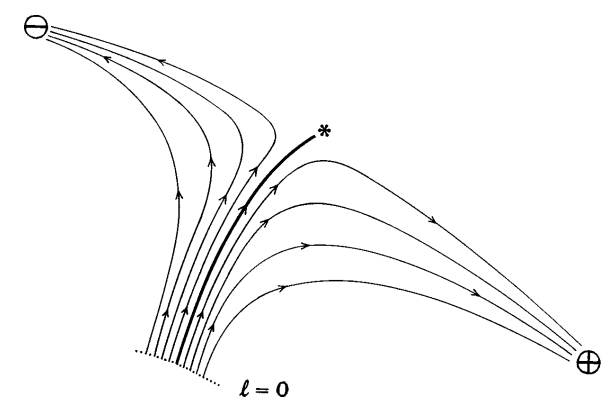
Consider a generic RG flow in a generic space of theories. diagram for a system with two coupling constants \(K\) and \(y\). Each point in the diagram represents a theory, and the arrows indicate the direction of the RG flow. The fixed points, where the arrows converge, correspond to theories that are scale-invariant.

{kind=link}
{kind=link}
{kind=link}
{kind=link}
{kind=link}
{kind=link}
The above figure shows the RG flow for the Ising model, a simple model of ferromagnetism. The fixed points correspond to the paramagnetic phase (\(K = 0\)) and the ferromagnetic phase (\(K = K_c\)). The critical point, where the two phases meet, is at \(K = K_c\).
The RG flow provides a way to understand the behavior of a system at different length scales. As we zoom out, the system flows towards a fixed point. The fixed point describes the long-distance behavior of the system.
For example, in the Ising model, as we zoom out, the system flows towards either the paramagnetic or the ferromagnetic fixed point, depending on the initial value of \(K\). If \(K < K_c\), the system flows towards the paramagnetic fixed point, and the spins become disordered at long distances. If \(K > K_c\), the system flows towards the ferromagnetic fixed point, and the spins become ordered at long distances.
What defines the space of possible theories? The symmetry of the physical system.
Symmetries determine the shape of theory-space
The Ising model on \(\mathbb{Z}^2\) is not a single theory, but an entire infinite-dimensional space of possible theories. Each Ising model can be specified by all coupling strengths for all possible spin configurations – nearest neighbors, next-nearest neighbors, four in a square, etc. However, they must follow the symmetries. We can’t have three-in-a-triangle, because switching up and down gives us the same energy. We can’t have \(Js_{(0, 0)}s_{(1, 0)}\) different from \(J's_{(1, 0)}s_{(2, 0)}\), because translating the whole plane by \((1, 0)\) gives us the same energy.
This is true in general: Symmetries determine the shape of theory-space.
Conversely, if two physical systems are constrained under the same symmetries, then their behavior are the same near the critical point, because their renormalization flows are the same.
The following table shows many theory-spaces with their corresponding symmetries.
| \(d\), the underlying space’s dimensions | \(n\), the internal degrees of freedom | Theoretical Model | Physical System | Order Parameter |
|---|---|---|---|---|
| 2 | 1 | Two dimensions | Adsorbed films | Surface density |
| 2 | XY model in two dimensions | Helium-4 films | Amplitude of superfluid phase | |
| 3 | Heisenberg model in two dimensions | Magnetization | ||
| >2 | ∞ | “Spherical” model | None | |
| 3 | 0 | Self-avoiding random walk | Conformation of long-chain polymers | Density of chain ends |
| 1 | Ising model in three dimensions | Uniaxial ferromagnet | Magnetization | |
| Fluid near a critical point | Density difference between phases | |||
| Mixture of liquids near consolute point | Concentration difference | |||
| Alloy near order-disorder transition | Concentration difference | |||
| 2 | XY model in three dimensions | Planar ferromagnet | Magnetization | |
| Helium 4 near superfluid transition | Amplitude of superfluid phase | |||
| 3 | Heisenberg model in three dimensions | Isotropic ferromagnet | Magnetization | |
| ≤4 | -2 | None | ||
| 32 | Quantum chromodynamics | Quarks bound in protons, neutrons, etc. |
As a particular example, with \(d=3, n=1\), we see that water-vapor mixture has the same critical behavior as copper-zinc alloy, or Ising model on three dimensions. We can think of vapor as just up-spin, and liquid as just down-spin. Next time you find yourself meditating upon a magnet, try reimagining it as a kettle of water, about to boil over.
| physical system | site types | |
|---|---|---|
| uniaxial magnet | up / down | |
| fluid | has atom / no atom | |
| brass crystal | zinc / copper | |
| simple lattice field theory | has particle / no particle |
Droplets inside droplets
Big whirls have little whirls that feed on their velocity,
and little whirls have lesser whirls and so on to viscosity.
I especially recommend playing with the interactive Ising model by Evgeny Demidov while reading this section.
We can interpret an Ising model over \(\mathbb{Z}^3\) as a mixture of liquid and gaseous water. Each site can either be in a liquid state or in a vapor state. We start below the critical temperature, so that the bonding strength \(J\) is just slightly larger than the critical \(J_c\). The system must make a free choice to make between being a liquid ocean with tiny islands of liquid or a vapor ocean with tiny islands of liquid. Both choices are equally good in our toy model. Since liquid wants to be in contact with liquid and vapor with vapor, the system must decide. For the sake of intuition, we say that we have an ocean of liquid with tiny droplets of vapor inside.
Now we increase the temperature towards the critical temperature. As we get hotter, thermal fluctuations become larger. In the ocean of liquid, a thermal fluctuation produces a droplet of vapor. This droplet secretes other material of the same density, and it grows larger and larger.
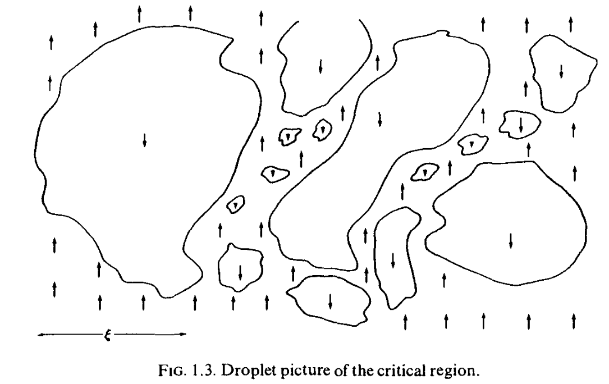
However, as criticality is approached, the energetic cost in making a fluctuation approaches zero. The energetic penalty in creating droplets gets smaller and smaller. So, the droplets can grow large, until it becomes infinite right at the critical point.
Furthermore, each droplet itself is a nearly-critical system, so fluctuations appear within the droplets, in a delicate fractal.

More is different
Like Wilson, Philip Anderson is a physicist who has won a Nobel Prize for his work on surprising things that happen when many particles interact. His Nobel Prize was awarded for his work on magnetism and “Anderson localization”. Consider a pure piece of metal. An electron wave can vibrate freely across it from side to side, like a wave on a perfectly uniform infinite ocean. Now if we dope the metal with impurities, like planting wave-breakers in the ocean, then as the amount of impurity increases, an electron wave would suddenly become trapped, and the metal would become an insulator.
In a famous paper (Anderson 1972), he interprets many-body physics like a philosopher (like what I’ve been doing in this whole section). He called the “constructionist hypothesis” the view that science divides neatly into fundamental laws and applications of those. He countered this view by proposing that scale and complexity create distinct stages in nature. Each stage necessitates new laws, concepts, and generalizations, and requires just as much ingenuity as the other stages. For example, psychology is not merely applied biology, biology is not simply applied chemistry, and condensed matter physics is not only “device engineering”.
Anderson proposed that new stages appear because of “broken symmetries”. Consider the sugar molecule. Though the sugar molecule is governed by quantum mechanics, which does not distinguish left from right, in our world we mostly only see sugar in one chirality. Sometime in the distant past, the symmetry was broken, and we are living in the consequences of its history.
More concretely, consider cars driving on a road. Why do we drive on the right instead of the left? Left or right, it’s better (“lower energy”) if everyone agrees. If people disagree, then it’s chaos (“higher energy”), so in the past, a coin was flipped, and we are here. In a parallel universe, we are driving on the left instead of the right. This is clear in the many-worlds interpretation of quantum mechanics:
\[ \ket{\Psi_{\text{world}}} = \frac{1}{\sqrt{2}} \ket{\Psi_{\text{world where we drive on the left}}} + \frac{1}{\sqrt{2}} \ket{\Psi_{\text{world where we drive on the right}}} \]
The state of the entire multiverse \(\ket{\Psi_{\text{world}}}\) is symmetric, but any observer has to fall into one of the sub-states, where the symmetry no longer holds.
However, Anderson pointedly did not explain what allows the stages to have laws largely independent of each other. Suppose that we have explained how some symmetries of the quantum-mechanical level break on the biochemistry level; we still have many questions. Why does the biochemistry level still have simple laws? And why these biochemical laws, but not others? Why are quantum mechanical laws and the everyday physics of frogs and cats so different, without the laws “bleeding into each other”?
Mesophysics: Why are things interesting between the large and the small?
The space of all theories is big, but most of it is rather uninteresting. Consider the humble Ising model on \(\mathbb{Z}^2\). Too much interaction and you get a block of spins all pointing in one direction. Too little interaction and you get a gas of spins pointing noisily in all directions. Only right at the critical point do we get interesting behavior in all possible scales. Not only that, the critical point is very delicate.
If you take an Ising model at \(J\) that is just a bit above \(J_c\) and zoom out, then by the RN flow equation, the effective \(J\) would keep increasing, and it becomes more and more uniform until it’s a perfect shade of black/white at \(J = +\infty\). Conversely, if you start with \(J\) slightly below \(J_c\) and keep zooming out, \(J\) would approach \(0\) and everything would become a uniform shade of gray, with the spins pointing up and down with no regard for any other spin. Balanced on a knife’s edge is \(J = J_c\), where there is interesting behavior at all levels of zooming.
But what keeps \(J = J_c\)?
Why is it that we are surprised by the quantum mechanics in the microscopic world? Because daily life in the mesoscopic world does not betray its origin from the microscopic world. The details has been renormalized away. But if that’s the case, how come our world is neither a homogeneous block of spins all pointing up nor a hot mess of spins unrelated to every other spin? Why is the mesoscopic world interesting?
Look around you. The world is interesting, with power laws, fractal patterns, and details at all scales. You never see a pencil standing on its end without a hand keeping it there. What keeps the mesoscopic world in its critical place?
One answer is that most of the interestingness did not come from criticality. However, if there exists some criticality in the mesoscopic world, and there does not seem to be an intelligent agent keeping the criticality there, then we have a mystery. This is the question that launched a thousand papers, including the famed self-organized criticality paper (Bak, Tang, and Wiesenfeld 1987), itself launching a thousand papers. The idea is typically illustrated by the forest fire model.
Consider the standard percolation model on a square grid. Each point might be occupied (a “tree” grows there) or unoccupied (empty plot of land). Randomly, lightning falls, and if it hits a tree, the tree catches on fire and the fire spreads to any neighboring trees. The process ends when there are no more burning trees.
As the proportion \(p\) of a site being occupied (“tree density”) changes, we see a phase transition. For low \(p < p_c\), there is no percolation, and so the fire quickly dies out. For high \(p > p_c\), there is percolation, and so the fire spreads across the entire grid. The process automatically balances the system at the critical value \(p_c\), the system is poised between these two regimes, and the burnt-out patches can be of any size, following a power-law distribution. In this way, the delicate critical point in the standard percolation model has been transformed to a robust critical point.
Nature shows an amazing variety of length scales: There is the Hubble radius of the universe, \(10^{10}\) light years or so and the radius of our own solar system, \(10^{11}\) meters roughly, and us-two meters perhaps, and an atom \(-10^{-10}\) meters in radius, and a proton \(10^{-16}\) meters, and the characteristic length of quantum gravity-which involves another factor of about \(10^{20}\).
How these vastly different lengths arise is a very interesting and fundamental question…. However, we can think about how one describes the region between these lengths. If one is looking at scales between two fundamental lengths, there are no nearby characteristic lengths. Similarly in critical phenomena, whenever one looks [at] any event which takes place between the scale of the lattice constant [the spacing between molecules or spins] and the much larger scale of the coherence length, one is in a situation in which there are no nearby characteristic lengths. (Kadanoff 1999b, 251)
In a footnote, Kadanoff suggested that self-organized criticality might explain forms of stable criticality we see around us. Kadanoff wrote the words in 1999, near the end of the 1980s–90s chaos theory boom. Since then, the self-organized criticality theory has fallen by the wayside, like fractal compression, mirrorshades, and large-folio printed pages of fractal art. The modern evaluation is that while it was oversold by Per Bak, and certainly could not explain all critical phenomena (Bak 1996), it can explain some of them (Watkins et al. 2016, sec. 8).
Universality: The details don’t matter
Or: Why elephants don’t know quantum mechanics, but don’t need to know it either.
In the early 20th century, material scientists noticed the remarkable phenomenon of “corresponding states”. As first reported by (Guggenheim 1945), scientists measured the density \(\rho\) of many substances near their liquid-vapor critical point. They fixed pressure and increased temperature \(T\) around the critical temperature \(T_c\). As they plotted the relation between \(T\) and \(\rho\), rescaled by critical temperature \(T_c\) and density at critical point \(\rho_c\), remarkably, all the substances fell onto a single curve.

Despite the diversity of intermolecular forces, the phase transition behavior of a wide variety of gasses follows a universal pattern.
We see this pattern over and over again in physics. To give another example, imagine water flowing through a porous rock, oil through sand, or electricity through a random network of resistors. These systems, seemingly completely unrelated, share the same underlying mathematical structure and exhibit universal behavior near the percolation threshold. This universality arises because the details of the microscopic interactions become irrelevant at larger scales, and the system’s behavior is governed by the collective properties of its components.
It is often noted that quantum mechanics is unintuitive, because the mesoscopic physics is so different from the microscopic physics, so we had evolved to intuit the mesoscopic world, and not the microscopic world. But why is it possible to ignore quantum mechanics? Elephants don’t need to know, or don’t care about, the Standard Model of particle physics.13 They don’t know and don’t need to know, because there is no natural selective pressure favoring elephants that have intuitions about quantum mechanics. When they walk, they push dirt around. When water flows, it pushes water around.
13 Nor do they play chess. (Brooks 1990)
For example, a cup of water is a composite of H2O molecules, so it should be studied by quantum mechanics. However, zooming out and out, we would find that the system falls into one of several possible fixed points (liquid, gas, solid) or critical points (boiling point, freezing point, triple point). In each case, the quantum-mechanical messiness has been renormalized away.
In general, the lesson is that the long-distance behavior of a system does not depend on the details of the short-distance interactions. The benefit of RN is that it saves us from the effort of understanding the microscopic details. On the flip-side, the details do matter if we are far from the critical or fixed point.
This is an overarching theme in renormalization theory, which might be called the universality hypothesis:
All phase transition problems can be divided into a small number of different classes depending upon the dimensionality of the system and the symmetries of the order state. Within each class, all phase transitions have identical behaviour in the critical region, only the names of the variables are changed. (Kadanoff 1999a, 273)
Furthermore, universality justifies our toy models as “serious play”. When I was first learning statistical mechanics, I was terribly confused by it. “They can’t be serious – do they think I’m stupid? How could the Ising model possibly be relevant to real magnets?” But the universality hypothesis justifies Ising models as serious toy models. Even if they are completely different from real magnets when far from the critical point, as we approach the critical point, their behavior becomes exactly equal at the limit.
RN theory explains why certain features matter when we zoom out and others are washed away. It explains why we have universal classes according to symmetry and dimension and not, say, the precise shape of the atomic force laws. It justifies the use of toy models instead of microscopically accurate models. Specifically, one starts with some microscopic accurate model, then apply renormalization and show that the details fall away and we end up at the same destination as the toy model. (Batterman 2019)
We may well try to simplify the nature of a model to the point where it represents a ‘mere caricature’ of reality. But notice that when one looks at a good political cartoon one can recognize the various characters even though the artist has portrayed them with but a few strokes. … [A] good theoretical model of a complex system should be like a good caricature: it should emphasize those features which are most important and should downplay the inessential details. (Fisher 1983, 47)
Koan: Sociophysics
“The details don’t matter.” said them triumphantly as they declared their independence from biophysics.
“‘The details don’t matter.’” said them mockingly as they declared their insurrection against sociophysics.
Yuxi’s Comment:14 The traditional approach of historians, going back to the days of “kings and battles”, is to run to personality theory and the individual acts, when confronted by a problem in sociology or economics! One establishes the individual actors, makes some (hopefully) sensible approximations of their personality makeups, and then attempts to explain events, actions, and so on. However, for truly complicated systems that these days are studied under the name of “sociophysics”, this is a hopeless task; furthermore, the questions it answers are not even the right ones. The modern theorist would rather explain how the stable features of the problem are invariant under different assumptions of what individual people do, and arise from features of their interactions. Indeed, if one had a perfect archive of exactly what every person thought and said during the start of WWI, one would still have no understanding of why it started!
14 Inspired by Tolstoy’s War and Peace.
The movement of humanity, arising as it does from innumerable arbitrary human wills, is continuous. To understand the laws of this continuous movement is the aim of history. But to arrive at these laws, resulting from the sum of all those human wills, man’s mind postulates arbitrary and disconnected units. The first method of history is to take an arbitrarily selected series of continuous events and examine it apart from others, though there is and can be no beginning to any event, for one event always flows uninterruptedly from another.
The second method is to consider the actions of some one man – a king or a commander – as equivalent to the sum of many individual wills; whereas the sum of individual wills is never expressed by the activity of a single historic personage.
Historical science in its endeavor to draw nearer to truth continually takes smaller and smaller units for examination. But however small the units it takes, we feel that to take any unit disconnected from others, or to assume a beginning of any phenomenon, or to say that the will of many men is expressed by the actions of any one historic personage, is in itself false.
Mumon’s Comment: Historians search for the king’s motive and the general’s ambition. They build castles of personality, moats of actions, yet understand nothing of the war. The great black spider traps its preys with a net so dense that nothing is lost after it has digested all of them.
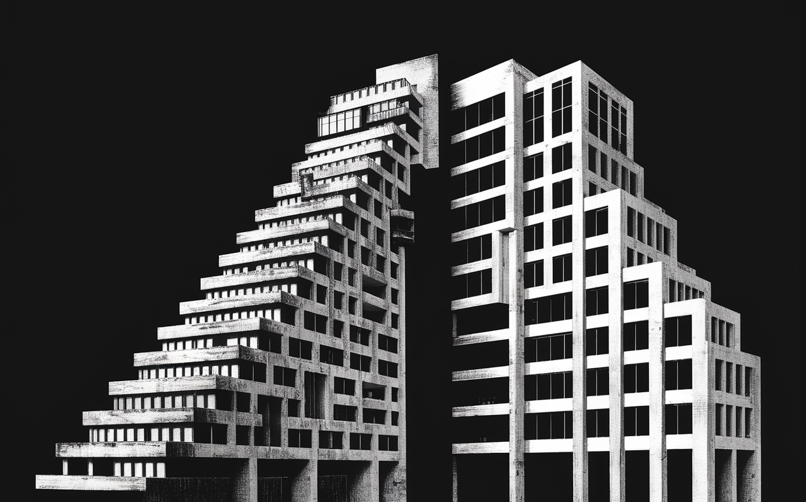
Appendix
If only I understood what this is saying, then I would have written it in. (Mehta and Schwab 2014)